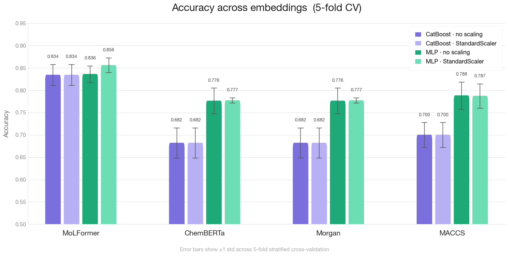
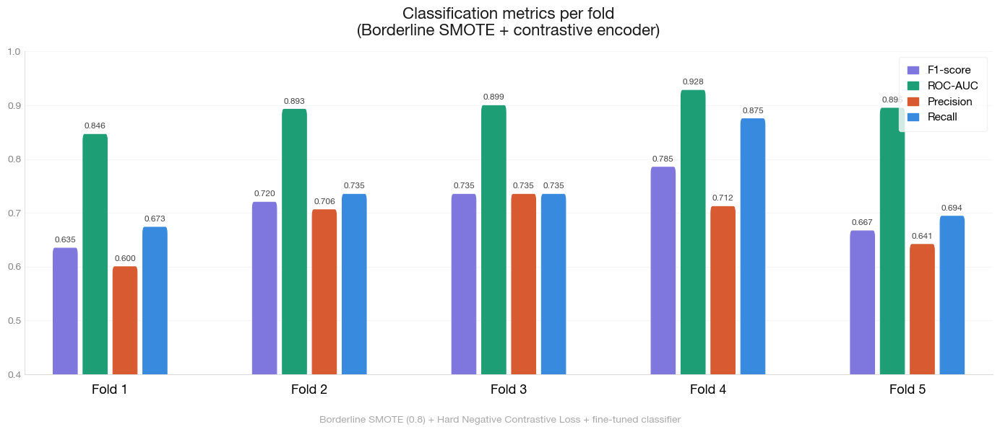
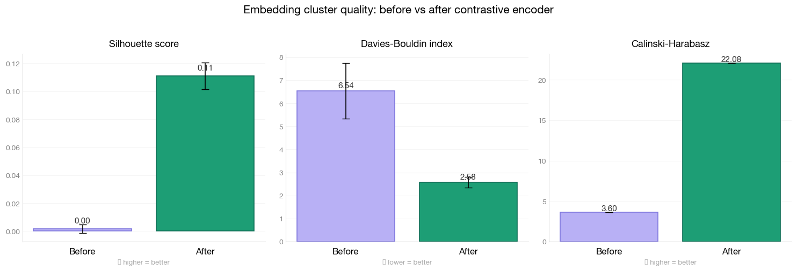
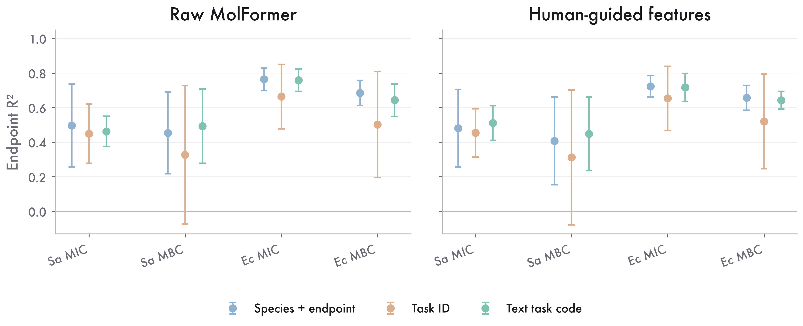
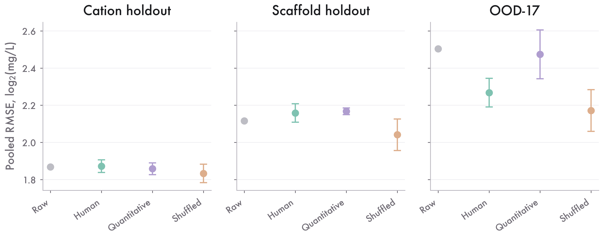
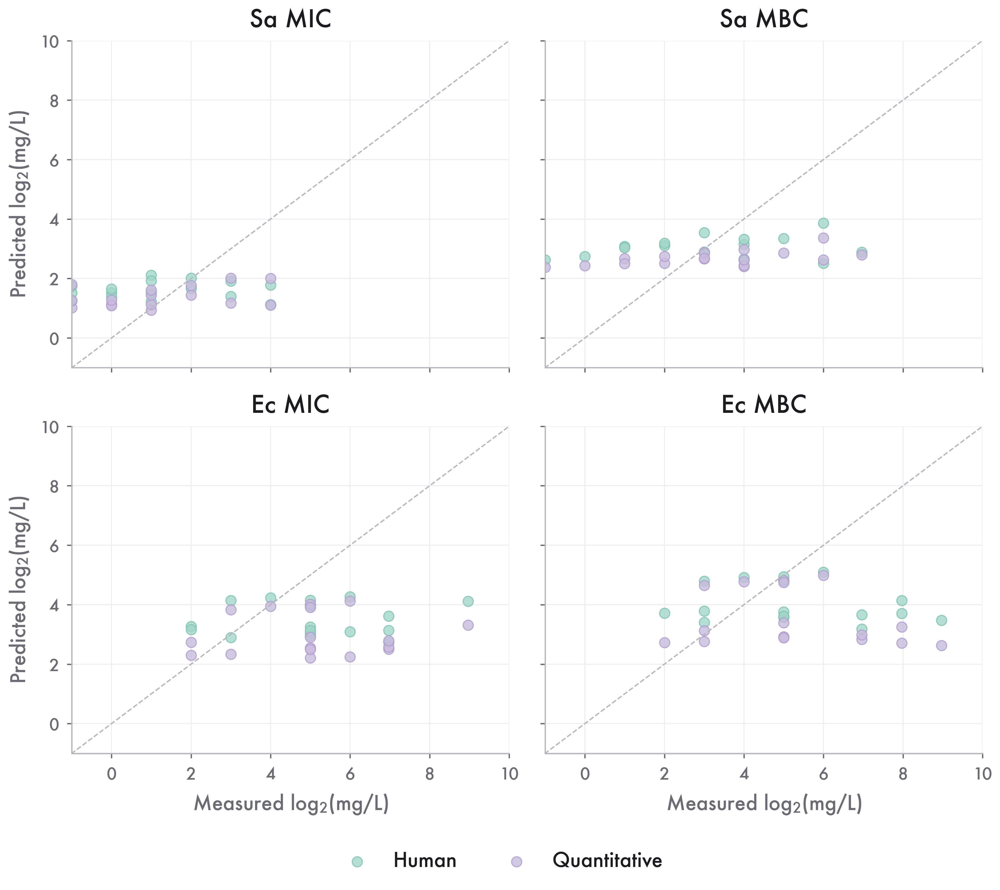
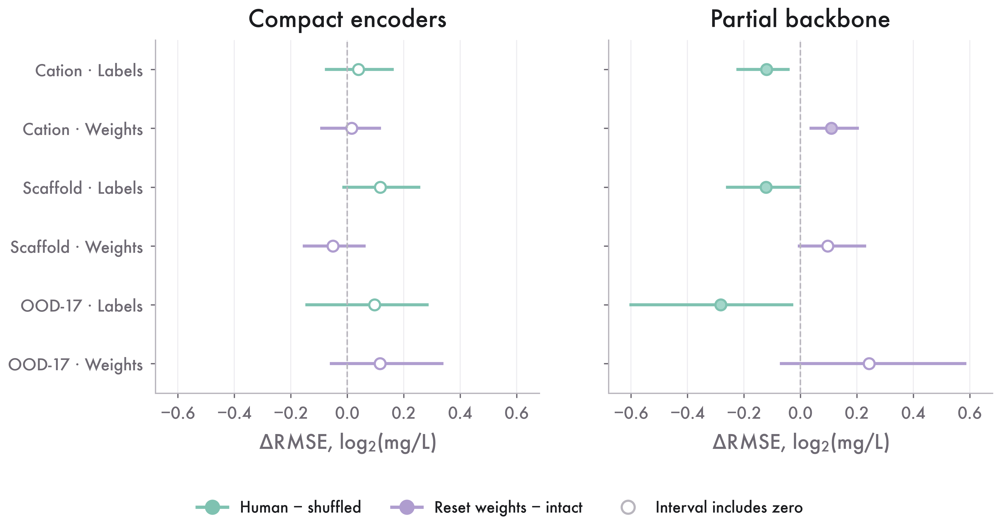
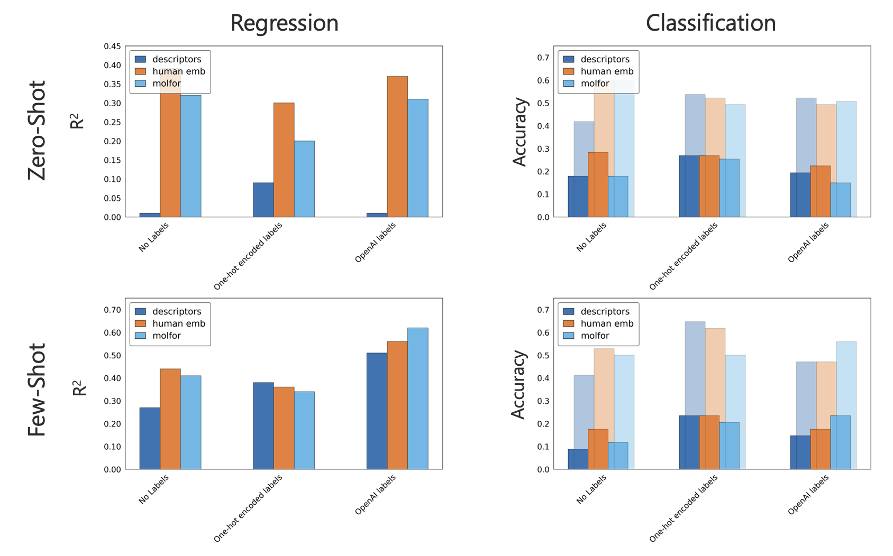
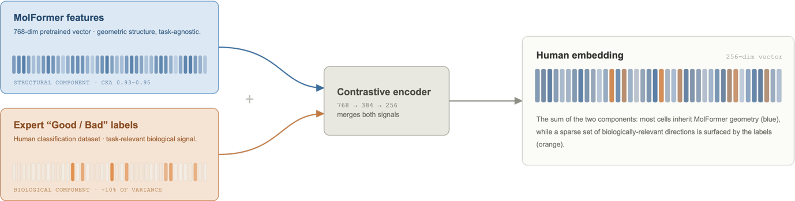

Supporting Information
Expert Judgement as Supervision: Binary Human Labels Match Quantitative Measurements for Representation Learning for Rational Design of Highly Efficient Biocides.
Egor A. Ilina, Nikita A. Frolova, Mary A. Seferyana, Anvar B. Valeeva, Egor V. Sinikina,b, Taygib M. Iliyasova, Andrey D. Vinokurova, Elena V. Detushevaa,c, Elizabeth Sonc, Michael G. Medvedev*a,d, Anatoly N. Vereshchagin*a
a N. D. Zelinsky Institute of Organic Chemistry, Russian Academy of Sciences, Leninsky prospect 47, Moscow 119991, Russian Federation; vereshchagin@ioc.ac.ru (A. N. V.); egor22366@gmail.com (E.A.I.); nfrolov@ioc.ac,ru (N. A. F.)
b Mendeleev University of Chemical Technology of Russia, Miusskaya square 9, Moscow, 125047, Russian Federation
c State Research Center for Applied Microbiology and Biotechnology, Territory “Quarter A”, no. 24, Obolensk, 142279 Serpukhov, Moscow Region, Russian Federation.
d National Research University Higher School of Economics, 101000 Moscow, Russian Federation
Content
Acronyms
MIC - Minimum Inhibitory Concentration
MBC - Minimum Bactericidal Concentration
QAC - Quaternary Ammonium Compound
OOD - Out-of-Distribution
RMSE - Root Mean Squared Error
MAE - Mean Absolute Error
SHAP - SHapley Additive exPlanations
CKA - Centered Kernel Alignment
PCA - Principal Component Analysis
MLP - Multilayer Perceptron
SMOTE - Synthetic Minority Over-sampling Technique
LoRA - Low-Rank Adaptation
S1. Expert annotation and molecular representations
S2. Reference results and task encoding
S3. Validation and matched compact encoders
S4. Molecular and tabular decoder comparisons
S5. Structural OOD evaluation
S6. External Q-HERO classification
S7. Geometry and intervention controls
S8. Chemistry and microbiological methods
S9. References
S10. Additional illustrations
S1. Expert annotation and molecular representations
Expert annotation yielded 1,103 final Good/Bad labels (859 Bad, 244 Good). After standardisation, the panel comprises 1,066 canonical full salts. Annotation logistics (collection dates, annotator identities, materials shown, access to quantitative values, blinding, aggregation and agreement statistics) will be completed by the experimental coauthors.
A five-fold representation benchmark compares MolFormer, ChemBERTa, Morgan and MACCS features for classifying expert labels. Figures S1–S4 show the corresponding diagnostic plots. These comparisons evaluate label classification and are not used as quantitative MIC/MBC generalisation metrics. The MolFormer F1 of 0.655 reported in the main text is the reference value for that comparison.

Figure S1. F1-score comparison across molecular representations for expert-label classification.

Figure S2. Accuracy comparison across molecular representations for expert-label classification.

Figure S3. Fold-specific classification metrics for the representation benchmark.

Figure S4. Embedding cluster-quality diagnostics for the contrastive representation.
S2. Reference results and task encoding
Frozen MolFormer provides 768-dimensional molecular features. The external encoder uses layer widths 768–512–384–256 (691,584 trainable parameters) and is trained without updating MolFormer weights. StandardScaler and Borderline SMOTE (sampling strategy 0.8) follow the reference training procedure. The contrastive projection head is removed before quantitative decoding.
Table S1. Reference holdout metrics for the primary quantitative endpoints. The E. coli MIC cell printed as R² = 0.60 corresponds to R² = 0.5918; the strain header ATCC 4300 is the original table typo for ATCC 43300.
| ML models | RMSE | ||||
| S. aureus ATCC 4300 | E. coli ATCC 25922 | ||||
| log2(MIC) | log2(MBC) | log2(MIC) | log2(MBC) | ||
| MLP | descriptors | 1.01 (R2=0.68) | 1.57 (R2=0.25) | 1.40 (R2=0.32) | 1.37 (R2=0.40) |
| MLP + stacking | - | 1.51 (R2=0.30) | 1.29 (R2=0.43) | 1.36 (R2=0.41) | |
| Multitask MLP | 0.87 (R2=0.70) | 1.43 (R2=0.41) | 1.31 (R2=0.41) | 1.33 (R2=0.46) | |
| MLP | embeddings | 1.36(R2=0.20) | 1.89 (R2=0.35) | 1.35 (R2=0.31) | 1.45 (R2=0.33) |
| Multitask Catboost | 0.91 (R2=0.71) | 0.95 (R2=0.64) | 1.31 (R2=0.43) | 1.08 (R2=0.74) | |
| Multitask + encodedclasses Catboost | 0.92 (R2=0.75) | 0.85 (R2=0.68) | 0.95 (R2=0.60) | 1.00 (R2=0.77) | |
| MIC and MBC [mg/L]; multitask means added labels of type bacteria and activity; encoded classes means added OpenAI encoded of type bacteria and activity | |||||
Table S2. Reference metrics for secondary quantitative comparisons. Author-reported values are retained.
| ML models | RMSE | ||||
| S. aureus ATCC 4300 | E. coli ATCC 25922 | ||||
| log2(MIC) | log2(MBC) | log2(MIC) | log2(MBC) | ||
| Catboost | classified embeddings | 1.36 (R2=0.20) | 1.89 (R2=0.35) | 1.35 (R2=0.31) | 1.45 (R2=0.33) |
| Multitask Catboost | 0.91 (R2=0.71) | 0.95 (R2=0.64) | 1.31 (R2=0.43) | 1.08 (R2=0.74) | |
| Multitask + encoded classes Catboost | 0.92 (R2=0.75) | 0.85 (R2=0.68) | 0.95 (R2=0.60) | 1.00 (R2=0.77) | |
| Catboost | multi regression embeddings | 1.19 (R2=0.23) | 1.64 (R2=0.38) | 1.22 (R2=0.37) | 1.29 (R2=0.37) |
| Multitask Catboost | 0.86 (R2=0.81) | 0.96 (R2=0.64) | 1.28 (R2=0.32) | 1.08 (R2=0.73) | |
| Multitask + encoded classes Catboost | 0.92 (R2=0.78) | 0.89 (R2=0.68) | 1.01 (R2=0.58) | 1.01 (R2=0.77) | |
| MIC and MBC [mg/L]; multitask means added labels of type bacteria and activity; encoded classes means added OpenAI encoded of type bacteria and activity; classified embeddings – embeddings after binary classified model; multi-regression embeddings – embeddings from multi-regression model; | |||||
Task encodings based on text use OpenAI text-embedding-3-small, yielding four fixed 1,536-dimensional vectors. Species and endpoint descriptions were submitted to the embedding service; molecular structures and target concentrations were not. Fixed task vectors are shared across folds. Categorical species/endpoint coding and categorical task-ID coding serve as controls.
Sa_MIC: Minimum Inhibitory Concentration against Staphylococcus aureus ATCC 43300, a methicillin-resistant Gram-positive bacterium. MIC measures the lowest concentration that inhibits visible bacterial growth.
Sa_MBC: Minimum Bactericidal Concentration against Staphylococcus aureus ATCC 43300, a methicillin-resistant Gram-positive bacterium. MBC measures the lowest concentration that kills 99.9% of bacteria.
Ec_MIC: Minimum Inhibitory Concentration against Escherichia coli ATCC 25922, a Gram-negative reference strain. MIC measures the lowest concentration that inhibits visible bacterial growth.
Ec_MBC: Minimum Bactericidal Concentration against Escherichia coli ATCC 25922, a Gram-negative reference strain. MBC measures the lowest concentration that kills 99.9% of bacteria.
S3. Validation and matched compact encoders
Row-wise validation follows the author worksheet protocol on 108 records representing 105 full salts. A withheld task row may still leave another measurement of the same molecule in the training set. Cation and scaffold holdouts keep the corresponding molecular groups outside target-training folds.
Uncertainty is reported as follows: fold standard deviation over five folds with ddof = 0; source-seed standard deviation over five complete runs with ddof = 1. These spreads are descriptive and are not 95% confidence intervals.
Table S3. Five-fold row-CV reconstruction: mean ± fold SD (ddof = 0).
| Representation / coding | Endpoint | Folds | RMSE mean ± SD | R² mean ± SD |
| v5_human / categorical_org_met | Ec_MBC | 5 | 1.1622 ± 0.1107 | 0.6573 ± 0.0718 |
| v5_human / categorical_org_met | Ec_MIC | 5 | 0.9744 ± 0.1351 | 0.7238 ± 0.0624 |
| v5_human / categorical_org_met | Sa_MBC | 5 | 1.4703 ± 0.3031 | 0.4076 ± 0.2529 |
| v5_human / categorical_org_met | Sa_MIC | 5 | 1.3364 ± 0.3599 | 0.4810 ± 0.2240 |
| v5_human / categorical_org_met | pooled | 5 | 1.2786 ± 0.1695 | 0.6625 ± 0.0368 |
| v5_human / categorical_task_id | Ec_MBC | 5 | 1.3152 ± 0.1902 | 0.5210 ± 0.2740 |
| v5_human / categorical_task_id | Ec_MIC | 5 | 1.0657 ± 0.3161 | 0.6540 ± 0.1856 |
| v5_human / categorical_task_id | Sa_MBC | 5 | 1.5240 ± 0.3385 | 0.3126 ± 0.3901 |
| v5_human / categorical_task_id | Sa_MIC | 5 | 1.3802 ± 0.2650 | 0.4548 ± 0.1390 |
| v5_human / categorical_task_id | pooled | 5 | 1.3450 ± 0.2158 | 0.6238 ± 0.0752 |
| v5_human / text | Ec_MBC | 5 | 1.1977 ± 0.1637 | 0.6434 ± 0.0508 |
| v5_human / text | Ec_MIC | 5 | 0.9827 ± 0.1811 | 0.7174 ± 0.0807 |
| v5_human / text | Sa_MBC | 5 | 1.4159 ± 0.2527 | 0.4493 ± 0.2132 |
| v5_human / text | Sa_MIC | 5 | 1.3019 ± 0.1867 | 0.5120 ± 0.1004 |
| v5_human / text | pooled | 5 | 1.2489 ± 0.1450 | 0.6765 ± 0.0376 |
| v5_raw / categorical_org_met | Ec_MBC | 5 | 1.1122 ± 0.1215 | 0.6856 ± 0.0722 |
| v5_raw / categorical_org_met | Ec_MIC | 5 | 0.8950 ± 0.1332 | 0.7645 ± 0.0655 |
| v5_raw / categorical_org_met | Sa_MBC | 5 | 1.4123 ± 0.2906 | 0.4540 ± 0.2356 |
| v5_raw / categorical_org_met | Sa_MIC | 5 | 1.3124 ± 0.4014 | 0.4972 ± 0.2409 |
| v5_raw / categorical_org_met | pooled | 5 | 1.2312 ± 0.1800 | 0.6863 ± 0.0473 |
| v5_raw / categorical_task_id | Ec_MBC | 5 | 1.3303 ± 0.1976 | 0.5027 ± 0.3062 |
| v5_raw / categorical_task_id | Ec_MIC | 5 | 1.0497 ± 0.3368 | 0.6644 ± 0.1863 |
| v5_raw / categorical_task_id | Sa_MBC | 5 | 1.4934 ± 0.3429 | 0.3277 ± 0.4000 |
| v5_raw / categorical_task_id | Sa_MIC | 5 | 1.3869 ± 0.3139 | 0.4499 ± 0.1719 |
| v5_raw / categorical_task_id | pooled | 5 | 1.3455 ± 0.2286 | 0.6220 ± 0.0872 |
| v5_raw / text | Ec_MBC | 5 | 1.1797 ± 0.1264 | 0.6438 ± 0.0942 |
| v5_raw / text | Ec_MIC | 5 | 0.9077 ± 0.1538 | 0.7589 ± 0.0650 |
| v5_raw / text | Sa_MBC | 5 | 1.3434 ± 0.2063 | 0.4939 ± 0.2149 |
| v5_raw / text | Sa_MIC | 5 | 1.3739 ± 0.2021 | 0.4626 ± 0.0876 |
| v5_raw / text | pooled | 5 | 1.2286 ± 0.1389 | 0.6848 ± 0.0475 |

Figure S5. Row-CV endpoint R² for raw and human-guided features. Bars show SD over five folds; symbols denote the three fixed task-coding configurations.
Table S4. Holdout endpoint metrics reconstructed on the 108 worksheet records.
| Representation / coding | Endpoint | n | RMSE | R² |
| v5_human / categorical | Sa_MIC | 22 | 1.0741 | 0.6587 |
| v5_human / categorical | Sa_MBC | 22 | 1.6136 | 0.4823 |
| v5_human / categorical | Ec_MIC | 21 | 1.2349 | 0.6523 |
| v5_human / categorical | Ec_MBC | 22 | 1.2775 | 0.7352 |
| v5_human / separate | Sa_MIC | 22 | 1.4333 | -0.1198 |
| v5_human / separate | Sa_MBC | 22 | 1.9153 | -0.0464 |
| v5_human / separate | Ec_MIC | 22 | 1.4463 | 0.1095 |
| v5_human / separate | Ec_MBC | 22 | 1.4293 | 0.1517 |
| v5_human / text | Sa_MIC | 22 | 0.9585 | 0.7282 |
| v5_human / text | Sa_MBC | 22 | 1.7659 | 0.3799 |
| v5_human / text | Ec_MIC | 21 | 0.9927 | 0.7753 |
| v5_human / text | Ec_MBC | 22 | 1.3418 | 0.7079 |
| v5_qac_ablation / categorical | Sa_MIC | 22 | 1.1182 | 0.6301 |
| v5_qac_ablation / categorical | Sa_MBC | 22 | 1.6248 | 0.4751 |
| v5_qac_ablation / categorical | Ec_MIC | 21 | 1.2227 | 0.6591 |
| v5_qac_ablation / categorical | Ec_MBC | 22 | 1.2812 | 0.7337 |
| v5_qac_ablation / separate | Sa_MIC | 22 | 1.1520 | 0.2766 |
| v5_qac_ablation / separate | Sa_MBC | 22 | 1.6796 | 0.1953 |
| v5_qac_ablation / separate | Ec_MIC | 22 | 1.3159 | 0.2629 |
| v5_qac_ablation / separate | Ec_MBC | 22 | 1.5079 | 0.0558 |
| v5_qac_ablation / text | Sa_MIC | 22 | 1.1301 | 0.6222 |
| v5_qac_ablation / text | Sa_MBC | 22 | 1.7806 | 0.3695 |
| v5_qac_ablation / text | Ec_MIC | 21 | 1.0346 | 0.7560 |
| v5_qac_ablation / text | Ec_MBC | 22 | 1.3830 | 0.6897 |
| v5_raw / categorical | Sa_MIC | 22 | 1.0774 | 0.6566 |
| v5_raw / categorical | Sa_MBC | 22 | 1.6515 | 0.4576 |
| v5_raw / categorical | Ec_MIC | 21 | 1.2803 | 0.6262 |
| v5_raw / categorical | Ec_MBC | 22 | 1.2253 | 0.7564 |
| v5_raw / separate | Sa_MIC | 22 | 1.1892 | 0.2292 |
| v5_raw / separate | Sa_MBC | 22 | 1.6440 | 0.2290 |
| v5_raw / separate | Ec_MIC | 22 | 1.2235 | 0.3628 |
| v5_raw / separate | Ec_MBC | 22 | 1.2846 | 0.3148 |
| v5_raw / text | Sa_MIC | 22 | 1.0473 | 0.6755 |
| v5_raw / text | Sa_MBC | 22 | 1.7129 | 0.4166 |
| v5_raw / text | Ec_MIC | 21 | 1.0246 | 0.7606 |
| v5_raw / text | Ec_MBC | 22 | 1.1014 | 0.8032 |
Matched compact encoders share 681 source molecules (377 training, 304 validation), five paired source seeds and 480 updates without SMOTE. Human Good/Bad contrastive supervision is compared with continuous-MIC regression, binary-MIC controls, shuffled labels and raw features under identical target-decoder budgets and partitions.
Table S5. Compact-control and representation configurations: seed-mean RMSE.
| Arm / coding | Endpoint | Cation CV | Scaffold CV | OOD-17 |
| binary_shuffled / categorical | Ec_MBC | 1.8929 | 2.0546 | 2.4307 |
| binary_shuffled / categorical | Ec_MIC | 1.7243 | 2.0121 | 2.2737 |
| binary_shuffled / categorical | Sa_MBC | 1.8650 | 2.1739 | 1.8703 |
| binary_shuffled / categorical | Sa_MIC | 1.7569 | 2.0008 | 1.7313 |
| binary_shuffled / categorical | pooled | 1.8113 | 2.0616 | 2.0939 |
| continuous_shuffled / categorical | Ec_MBC | 1.9903 | 2.1692 | 2.6393 |
| continuous_shuffled / categorical | Ec_MIC | 1.8686 | 2.1318 | 2.6086 |
| continuous_shuffled / categorical | Sa_MBC | 2.0054 | 2.3181 | 2.2961 |
| continuous_shuffled / categorical | Sa_MIC | 1.8718 | 2.1188 | 2.0641 |
| continuous_shuffled / categorical | pooled | 1.9353 | 2.1863 | 2.4185 |
| human / categorical | Ec_MBC | 1.9134 | 2.1098 | 2.5511 |
| human / categorical | Ec_MIC | 1.7590 | 2.0543 | 2.4426 |
| human / categorical | Sa_MBC | 1.9728 | 2.3132 | 2.1125 |
| human / categorical | Sa_MIC | 1.8371 | 2.1463 | 1.9183 |
| human / categorical | pooled | 1.8724 | 2.1583 | 2.2680 |
| human / onehot | Ec_MBC | 1.8723 | 2.1889 | 2.4709 |
| human / onehot | Ec_MIC | 1.7426 | 2.1361 | 2.4478 |
| human / onehot | Sa_MBC | 1.9657 | 2.1832 | 2.0925 |
| human / onehot | Sa_MIC | 1.7867 | 2.0972 | 1.9804 |
| human / onehot | pooled | 1.8438 | 2.1517 | 2.2548 |
| human / random_code | Ec_MBC | 1.8946 | 2.2442 | 2.5875 |
| human / random_code | Ec_MIC | 1.7849 | 2.1572 | 2.5778 |
| human / random_code | Sa_MBC | 1.9784 | 2.2789 | 2.1448 |
| human / random_code | Sa_MIC | 1.8167 | 2.1566 | 1.9487 |
| human / random_code | pooled | 1.8701 | 2.2099 | 2.3272 |
| human / text | Ec_MBC | 1.9276 | 2.1990 | 2.5143 |
| human / text | Ec_MIC | 1.7896 | 2.0904 | 2.4445 |
| human / text | Sa_MBC | 1.9889 | 2.2970 | 2.0912 |
| human / text | Sa_MIC | 1.8514 | 2.1801 | 1.9533 |
| human / text | pooled | 1.8912 | 2.1930 | 2.2600 |
| human / text_permuted | Ec_MBC | 1.9278 | 2.2135 | 2.5084 |
| human / text_permuted | Ec_MIC | 1.8149 | 2.1335 | 2.5010 |
| human / text_permuted | Sa_MBC | 1.9876 | 2.2479 | 2.1316 |
| human / text_permuted | Sa_MIC | 1.8320 | 2.1563 | 1.9966 |
| human / text_permuted | pooled | 1.8919 | 2.1883 | 2.2922 |
| human_shuffled / categorical | Ec_MBC | 1.9216 | 2.0319 | 2.4616 |
| human_shuffled / categorical | Ec_MIC | 1.7391 | 1.9818 | 2.3910 |
| human_shuffled / categorical | Sa_MBC | 1.8679 | 2.1617 | 2.0458 |
| human_shuffled / categorical | Sa_MIC | 1.7983 | 1.9847 | 1.7230 |
| human_shuffled / categorical | pooled | 1.8332 | 2.0414 | 2.1716 |
| human_weight_only / categorical | Ec_MBC | 1.9619 | 2.1121 | 2.6253 |
| human_weight_only / categorical | Ec_MIC | 1.7928 | 2.0586 | 2.6645 |
| human_weight_only / categorical | Sa_MBC | 1.9613 | 2.2329 | 2.2142 |
| human_weight_only / categorical | Sa_MIC | 1.8299 | 2.0203 | 1.9600 |
| human_weight_only / categorical | pooled | 1.8881 | 2.1076 | 2.3840 |
| initial / categorical | Ec_MBC | 1.9887 | 2.0858 | 2.4595 |
| initial / categorical | Ec_MIC | 1.8106 | 2.0384 | 2.5089 |
| initial / categorical | Sa_MBC | 1.9368 | 2.2038 | 2.2137 |
| initial / categorical | Sa_MIC | 1.8143 | 2.0018 | 2.0414 |
| initial / categorical | pooled | 1.8893 | 2.0840 | 2.3131 |
| matched_raw / categorical | Ec_MBC | 1.9534 | 2.1059 | 2.7320 |
| matched_raw / categorical | Ec_MIC | 1.8127 | 2.0625 | 2.9662 |
| matched_raw / categorical | Sa_MBC | 1.9114 | 2.2428 | 2.3310 |
| matched_raw / categorical | Sa_MIC | 1.7889 | 2.0459 | 1.8576 |
| matched_raw / categorical | pooled | 1.8678 | 2.1157 | 2.5038 |
| matched_raw / onehot | Ec_MBC | 1.9386 | 2.0716 | 2.1726 |
| matched_raw / onehot | Ec_MIC | 1.8198 | 2.0316 | 2.3036 |
| matched_raw / onehot | Sa_MBC | 1.9153 | 2.1245 | 2.2250 |
| matched_raw / onehot | Sa_MIC | 1.7915 | 2.0225 | 2.0318 |
| matched_raw / onehot | pooled | 1.8673 | 2.0629 | 2.1857 |
| matched_raw / text | Ec_MBC | 1.9571 | 2.1477 | 2.3348 |
| matched_raw / text | Ec_MIC | 1.8229 | 2.0978 | 2.5028 |
| matched_raw / text | Sa_MBC | 1.9015 | 2.1415 | 2.1117 |
| matched_raw / text | Sa_MIC | 1.7654 | 2.0210 | 1.9449 |
| matched_raw / text | pooled | 1.8631 | 2.1026 | 2.2321 |
| mic_binary / categorical | Ec_MBC | 1.8840 | 2.0558 | 2.5923 |
| mic_binary / categorical | Ec_MIC | 1.7417 | 2.0308 | 2.5124 |
| mic_binary / categorical | Sa_MBC | 1.9789 | 2.2656 | 2.0509 |
| mic_binary / categorical | Sa_MIC | 1.8469 | 2.0776 | 1.8802 |
| mic_binary / categorical | pooled | 1.8649 | 2.1096 | 2.2759 |
| mic_binary / text | Ec_MBC | 1.8764 | 2.0998 | 2.5049 |
| mic_binary / text | Ec_MIC | 1.7669 | 2.0205 | 2.4006 |
| mic_binary / text | Sa_MBC | 1.9773 | 2.2368 | 2.0789 |
| mic_binary / text | Sa_MIC | 1.8445 | 2.0808 | 1.8863 |
| mic_binary / text | pooled | 1.8681 | 2.1110 | 2.2340 |
| mic_continuous / categorical | Ec_MBC | 1.8763 | 2.1597 | 2.9780 |
| mic_continuous / categorical | Ec_MIC | 1.7554 | 2.1518 | 2.8449 |
| mic_continuous / categorical | Sa_MBC | 1.9814 | 2.3312 | 2.1047 |
| mic_continuous / categorical | Sa_MIC | 1.8125 | 2.0163 | 1.7707 |
| mic_continuous / categorical | pooled | 1.8584 | 2.1677 | 2.4738 |
| mic_continuous / text | Ec_MBC | 1.8488 | 2.1814 | 3.0417 |
| mic_continuous / text | Ec_MIC | 1.7629 | 2.1252 | 2.8322 |
| mic_continuous / text | Sa_MBC | 1.9282 | 2.2415 | 2.0960 |
| mic_continuous / text | Sa_MIC | 1.7851 | 2.0352 | 1.7856 |
| mic_continuous / text | pooled | 1.8326 | 2.1474 | 2.4948 |
| v5_human / categorical | Ec_MBC | 1.9442 | 2.0452 | 2.4605 |
| v5_human / categorical | Ec_MIC | 1.8169 | 2.0529 | 2.5352 |
| v5_human / categorical | Sa_MBC | 1.9894 | 2.2378 | 2.1728 |
| v5_human / categorical | Sa_MIC | 1.8177 | 2.0488 | 1.6537 |
| v5_human / categorical | pooled | 1.8936 | 2.0978 | 2.2289 |
| v5_human / onehot | Ec_MBC | 1.9911 | 2.0765 | 2.2699 |
| v5_human / onehot | Ec_MIC | 1.8605 | 2.0302 | 2.2740 |
| v5_human / onehot | Sa_MBC | 2.0148 | 2.1459 | 2.1984 |
| v5_human / onehot | Sa_MIC | 1.8025 | 2.0169 | 1.7163 |
| v5_human / onehot | pooled | 1.9193 | 2.0680 | 2.1251 |
| v5_human / separate | Ec_MBC | 2.0195 | 2.0593 | 2.1309 |
| v5_human / separate | Ec_MIC | 1.8889 | 2.0038 | 2.1412 |
| v5_human / separate | Sa_MBC | 2.0098 | 2.1809 | 2.2217 |
| v5_human / separate | Sa_MIC | 1.7933 | 2.0833 | 1.7883 |
| v5_human / separate | pooled | 1.9301 | 2.0828 | 2.0764 |
| v5_human / text | Ec_MBC | 1.9929 | 2.1198 | 2.1558 |
| v5_human / text | Ec_MIC | 1.8597 | 2.0250 | 2.0799 |
| v5_human / text | Sa_MBC | 1.9723 | 2.1909 | 2.0976 |
| v5_human / text | Sa_MIC | 1.7893 | 2.0601 | 1.7415 |
| v5_human / text | pooled | 1.9054 | 2.0999 | 2.0232 |
| v5_qac_ablation / categorical | Ec_MBC | 1.9429 | 1.9814 | 2.7519 |
| v5_qac_ablation / categorical | Ec_MIC | 1.7947 | 1.9717 | 2.8495 |
| v5_qac_ablation / categorical | Sa_MBC | 1.9241 | 2.1364 | 2.3717 |
| v5_qac_ablation / categorical | Sa_MIC | 1.7288 | 1.8976 | 1.7433 |
| v5_qac_ablation / categorical | pooled | 1.8498 | 1.9987 | 2.4631 |
| v5_qac_ablation / onehot | Ec_MBC | 2.0030 | 2.0342 | 2.5741 |
| v5_qac_ablation / onehot | Ec_MIC | 1.8471 | 1.9710 | 2.4897 |
| v5_qac_ablation / onehot | Sa_MBC | 1.9317 | 2.1273 | 2.3480 |
| v5_qac_ablation / onehot | Sa_MIC | 1.7222 | 1.9322 | 1.7026 |
| v5_qac_ablation / onehot | pooled | 1.8789 | 2.0175 | 2.2999 |
| v5_qac_ablation / separate | Ec_MBC | 2.0095 | 2.0762 | 2.4927 |
| v5_qac_ablation / separate | Ec_MIC | 1.7916 | 1.9959 | 2.6511 |
| v5_qac_ablation / separate | Sa_MBC | 1.9805 | 2.1216 | 2.3097 |
| v5_qac_ablation / separate | Sa_MIC | 1.7341 | 1.8851 | 1.6720 |
| v5_qac_ablation / separate | pooled | 1.8826 | 2.0217 | 2.3087 |
| v5_qac_ablation / text | Ec_MBC | 1.8880 | 2.0629 | 2.6845 |
| v5_qac_ablation / text | Ec_MIC | 1.7270 | 1.9762 | 2.6384 |
| v5_qac_ablation / text | Sa_MBC | 1.8869 | 2.1070 | 2.4193 |
| v5_qac_ablation / text | Sa_MIC | 1.6417 | 1.9006 | 1.8050 |
| v5_qac_ablation / text | pooled | 1.7890 | 2.0133 | 2.4081 |
| v5_raw / categorical | Ec_MBC | 1.9728 | 2.1056 | 2.9011 |
| v5_raw / categorical | Ec_MIC | 1.8227 | 2.0783 | 2.8696 |
| v5_raw / categorical | Sa_MBC | 1.9480 | 2.1998 | 2.0848 |
| v5_raw / categorical | Sa_MIC | 1.8159 | 1.9856 | 1.7175 |
| v5_raw / categorical | pooled | 1.8912 | 2.0937 | 2.4394 |
| v5_raw / onehot | Ec_MBC | 1.9805 | 2.1181 | 2.5716 |
| v5_raw / onehot | Ec_MIC | 1.8486 | 2.0396 | 2.5801 |
| v5_raw / onehot | Sa_MBC | 1.9467 | 2.1534 | 2.0615 |
| v5_raw / onehot | Sa_MIC | 1.7660 | 2.0145 | 1.5467 |
| v5_raw / onehot | pooled | 1.8873 | 2.0821 | 2.2257 |
| v5_raw / separate | Ec_MBC | 2.0275 | 2.1363 | 2.4428 |
| v5_raw / separate | Ec_MIC | 1.8478 | 1.9962 | 2.5490 |
| v5_raw / separate | Sa_MBC | 1.9906 | 2.2075 | 2.0901 |
| v5_raw / separate | Sa_MIC | 1.7869 | 1.9962 | 1.6519 |
| v5_raw / separate | pooled | 1.9158 | 2.0861 | 2.2078 |
| v5_raw / text | Ec_MBC | 1.9842 | 2.1230 | 2.5903 |
| v5_raw / text | Ec_MIC | 1.8242 | 2.0443 | 2.5779 |
| v5_raw / text | Sa_MBC | 1.9580 | 2.2034 | 2.0491 |
| v5_raw / text | Sa_MIC | 1.8037 | 2.0293 | 1.6454 |
| v5_raw / text | pooled | 1.8942 | 2.1011 | 2.2452 |
Table S6. Complete compact-arm results: mean ± sample SD across source runs (ddof = 1).
| Arm / coding | Regime / endpoint | Seeds | RMSE mean ± SD | R² mean ± SD |
| binary_shuffled / categorical | full-QAC105 / Ec_MBC | 5 | 2.4307 ± 0.1901 | -0.5178 ± 0.2440 |
| binary_shuffled / categorical | full-QAC105 / Ec_MIC | 5 | 2.2737 ± 0.2194 | -0.5733 ± 0.3139 |
| binary_shuffled / categorical | full-QAC105 / Sa_MBC | 5 | 1.8703 ± 0.0526 | 0.2192 ± 0.0437 |
| binary_shuffled / categorical | full-QAC105 / Sa_MIC | 5 | 1.7313 ± 0.1133 | 0.0167 ± 0.1282 |
| binary_shuffled / categorical | full-QAC105 / pooled | 5 | 2.0939 ± 0.0877 | — |
| binary_shuffled / categorical | cation / Ec_MBC | 5 | 1.8929 ± 0.0497 | 0.1787 ± 0.0433 |
| binary_shuffled / categorical | cation / Ec_MIC | 5 | 1.7243 ± 0.0439 | 0.2338 ± 0.0394 |
| binary_shuffled / categorical | cation / Sa_MBC | 5 | 1.8650 ± 0.0484 | 0.0972 ± 0.0467 |
| binary_shuffled / categorical | cation / Sa_MIC | 5 | 1.7569 ± 0.0434 | 0.1957 ± 0.0398 |
| binary_shuffled / categorical | cation / pooled | 5 | 1.8113 ± 0.0369 | — |
| binary_shuffled / categorical | scaffold / Ec_MBC | 5 | 2.0546 ± 0.0354 | 0.0327 ± 0.0334 |
| binary_shuffled / categorical | scaffold / Ec_MIC | 5 | 2.0121 ± 0.0236 | -0.0429 ± 0.0245 |
| binary_shuffled / categorical | scaffold / Sa_MBC | 5 | 2.1739 ± 0.0297 | -0.2261 ± 0.0335 |
| binary_shuffled / categorical | scaffold / Sa_MIC | 5 | 2.0008 ± 0.0218 | -0.0426 ± 0.0227 |
| binary_shuffled / categorical | scaffold / pooled | 5 | 2.0616 ± 0.0168 | — |
| continuous_shuffled / categorical | full-QAC105 / Ec_MBC | 5 | 2.6393 ± 0.2234 | -0.7909 ± 0.2988 |
| continuous_shuffled / categorical | full-QAC105 / Ec_MIC | 5 | 2.6086 ± 0.1932 | -1.0645 ± 0.3121 |
| continuous_shuffled / categorical | full-QAC105 / Sa_MBC | 5 | 2.2961 ± 0.1962 | -0.1829 ± 0.2024 |
| continuous_shuffled / categorical | full-QAC105 / Sa_MIC | 5 | 2.0641 ± 0.4075 | -0.4363 ± 0.6186 |
| continuous_shuffled / categorical | full-QAC105 / pooled | 5 | 2.4185 ± 0.1503 | — |
| continuous_shuffled / categorical | cation / Ec_MBC | 5 | 1.9903 ± 0.0722 | 0.0915 ± 0.0645 |
| continuous_shuffled / categorical | cation / Ec_MIC | 5 | 1.8686 ± 0.0356 | 0.1004 ± 0.0339 |
| continuous_shuffled / categorical | cation / Sa_MBC | 5 | 2.0054 ± 0.0802 | -0.0446 ± 0.0831 |
| continuous_shuffled / categorical | cation / Sa_MIC | 5 | 1.8718 ± 0.0408 | 0.0873 ± 0.0399 |
| continuous_shuffled / categorical | cation / pooled | 5 | 1.9353 ± 0.0505 | — |
| continuous_shuffled / categorical | scaffold / Ec_MBC | 5 | 2.1692 ± 0.0831 | -0.0792 ± 0.0823 |
| continuous_shuffled / categorical | scaffold / Ec_MIC | 5 | 2.1318 ± 0.0862 | -0.1721 ± 0.0952 |
| continuous_shuffled / categorical | scaffold / Sa_MBC | 5 | 2.3181 ± 0.0593 | -0.3947 ± 0.0711 |
| continuous_shuffled / categorical | scaffold / Sa_MIC | 5 | 2.1188 ± 0.0536 | -0.1697 ± 0.0592 |
| continuous_shuffled / categorical | scaffold / pooled | 5 | 2.1863 ± 0.0558 | — |
| human / categorical | full-QAC105 / Ec_MBC | 5 | 2.5511 ± 0.1522 | -0.6684 ± 0.1992 |
| human / categorical | full-QAC105 / Ec_MIC | 5 | 2.4426 ± 0.1988 | -0.8118 ± 0.2883 |
| human / categorical | full-QAC105 / Sa_MBC | 5 | 2.1125 ± 0.0554 | 0.0040 ± 0.0528 |
| human / categorical | full-QAC105 / Sa_MIC | 5 | 1.9183 ± 0.0812 | -0.2048 ± 0.1042 |
| human / categorical | full-QAC105 / pooled | 5 | 2.2680 ± 0.0774 | — |
| human / categorical | cation / Ec_MBC | 5 | 1.9134 ± 0.0361 | 0.1610 ± 0.0318 |
| human / categorical | cation / Ec_MIC | 5 | 1.7590 ± 0.0228 | 0.2030 ± 0.0207 |
| human / categorical | cation / Sa_MBC | 5 | 1.9728 ± 0.0475 | -0.0101 ± 0.0485 |
| human / categorical | cation / Sa_MIC | 5 | 1.8371 ± 0.0503 | 0.1205 ± 0.0482 |
| human / categorical | cation / pooled | 5 | 1.8724 ± 0.0339 | — |
| human / categorical | scaffold / Ec_MBC | 5 | 2.1098 ± 0.0646 | -0.0205 ± 0.0630 |
| human / categorical | scaffold / Ec_MIC | 5 | 2.0543 ± 0.0646 | -0.0878 ± 0.0693 |
| human / categorical | scaffold / Sa_MBC | 5 | 2.3132 ± 0.0417 | -0.3884 ± 0.0501 |
| human / categorical | scaffold / Sa_MIC | 5 | 2.1463 ± 0.0724 | -0.2007 ± 0.0808 |
| human / categorical | scaffold / pooled | 5 | 2.1583 ± 0.0496 | — |
| human / text | full-QAC105 / Ec_MBC | 5 | 2.5143 ± 0.1143 | -0.6186 ± 0.1442 |
| human / text | full-QAC105 / Ec_MIC | 5 | 2.4445 ± 0.1575 | -0.8111 ± 0.2246 |
| human / text | full-QAC105 / Sa_MBC | 5 | 2.0912 ± 0.0482 | 0.0241 ± 0.0453 |
| human / text | full-QAC105 / Sa_MIC | 5 | 1.9533 ± 0.0700 | -0.2486 ± 0.0907 |
| human / text | full-QAC105 / pooled | 5 | 2.2600 ± 0.0768 | — |
| human / text | cation / Ec_MBC | 5 | 1.9276 ± 0.0537 | 0.1482 ± 0.0470 |
| human / text | cation / Ec_MIC | 5 | 1.7896 ± 0.0474 | 0.1746 ± 0.0436 |
| human / text | cation / Sa_MBC | 5 | 1.9889 ± 0.0655 | -0.0270 ± 0.0671 |
| human / text | cation / Sa_MIC | 5 | 1.8514 ± 0.1042 | 0.1051 ± 0.0985 |
| human / text | cation / pooled | 5 | 1.8912 ± 0.0579 | — |
| human / text | scaffold / Ec_MBC | 5 | 2.1990 ± 0.0389 | -0.1081 ± 0.0392 |
| human / text | scaffold / Ec_MIC | 5 | 2.0904 ± 0.0495 | -0.1259 ± 0.0533 |
| human / text | scaffold / Sa_MBC | 5 | 2.2970 ± 0.0641 | -0.3695 ± 0.0770 |
| human / text | scaffold / Sa_MIC | 5 | 2.1801 ± 0.0360 | -0.2380 ± 0.0410 |
| human / text | scaffold / pooled | 5 | 2.1930 ± 0.0395 | — |
| human_shuffled / categorical | full-QAC105 / Ec_MBC | 5 | 2.4616 ± 0.1228 | -0.5521 ± 0.1543 |
| human_shuffled / categorical | full-QAC105 / Ec_MIC | 5 | 2.3910 ± 0.1937 | -0.7360 ± 0.2769 |
| human_shuffled / categorical | full-QAC105 / Sa_MBC | 5 | 2.0458 ± 0.1086 | 0.0643 ± 0.0994 |
| human_shuffled / categorical | full-QAC105 / Sa_MIC | 5 | 1.7230 ± 0.0283 | 0.0292 ± 0.0319 |
| human_shuffled / categorical | full-QAC105 / pooled | 5 | 2.1716 ± 0.1120 | — |
| human_shuffled / categorical | cation / Ec_MBC | 5 | 1.9216 ± 0.0280 | 0.1540 ± 0.0246 |
| human_shuffled / categorical | cation / Ec_MIC | 5 | 1.7391 ± 0.0610 | 0.2202 ± 0.0540 |
| human_shuffled / categorical | cation / Sa_MBC | 5 | 1.8679 ± 0.0649 | 0.0940 ± 0.0619 |
| human_shuffled / categorical | cation / Sa_MIC | 5 | 1.7983 ± 0.0568 | 0.1571 ± 0.0528 |
| human_shuffled / categorical | cation / pooled | 5 | 1.8332 ± 0.0495 | — |
| human_shuffled / categorical | scaffold / Ec_MBC | 5 | 2.0319 ± 0.0763 | 0.0531 ± 0.0709 |
| human_shuffled / categorical | scaffold / Ec_MIC | 5 | 1.9818 ± 0.0870 | -0.0131 ± 0.0879 |
| human_shuffled / categorical | scaffold / Sa_MBC | 5 | 2.1617 ± 0.1004 | -0.2143 ± 0.1126 |
| human_shuffled / categorical | scaffold / Sa_MIC | 5 | 1.9847 ± 0.0806 | -0.0272 ± 0.0826 |
| human_shuffled / categorical | scaffold / pooled | 5 | 2.0414 ± 0.0846 | — |
| human_weight_only / categorical | full-QAC105 / Ec_MBC | 5 | 2.6253 ± 0.1591 | -0.7670 ± 0.2108 |
| human_weight_only / categorical | full-QAC105 / Ec_MIC | 5 | 2.6645 ± 0.2457 | -1.1592 ± 0.3886 |
| human_weight_only / categorical | full-QAC105 / Sa_MBC | 5 | 2.2142 ± 0.1285 | -0.0966 ± 0.1254 |
| human_weight_only / categorical | full-QAC105 / Sa_MIC | 5 | 1.9600 ± 0.2042 | -0.2668 ± 0.2565 |
| human_weight_only / categorical | full-QAC105 / pooled | 5 | 2.3840 ± 0.1197 | — |
| human_weight_only / categorical | cation / Ec_MBC | 5 | 1.9619 ± 0.0261 | 0.1181 ± 0.0234 |
| human_weight_only / categorical | cation / Ec_MIC | 5 | 1.7928 ± 0.0325 | 0.1720 ± 0.0300 |
| human_weight_only / categorical | cation / Sa_MBC | 5 | 1.9613 ± 0.0164 | 0.0021 ± 0.0167 |
| human_weight_only / categorical | cation / Sa_MIC | 5 | 1.8299 ± 0.0232 | 0.1279 ± 0.0222 |
| human_weight_only / categorical | cation / pooled | 5 | 1.8881 ± 0.0198 | — |
| human_weight_only / categorical | scaffold / Ec_MBC | 5 | 2.1121 ± 0.0412 | -0.0222 ± 0.0399 |
| human_weight_only / categorical | scaffold / Ec_MIC | 5 | 2.0586 ± 0.0456 | -0.0919 ± 0.0483 |
| human_weight_only / categorical | scaffold / Sa_MBC | 5 | 2.2329 ± 0.0351 | -0.2936 ± 0.0409 |
| human_weight_only / categorical | scaffold / Sa_MIC | 5 | 2.0203 ± 0.0380 | -0.0633 ± 0.0405 |
| human_weight_only / categorical | scaffold / pooled | 5 | 2.1076 ± 0.0352 | — |
| initial / categorical | full-QAC105 / Ec_MBC | 5 | 2.4595 ± 0.2411 | -0.5582 ± 0.3034 |
| initial / categorical | full-QAC105 / Ec_MIC | 5 | 2.5089 ± 0.2147 | -0.9125 ± 0.3370 |
| initial / categorical | full-QAC105 / Sa_MBC | 5 | 2.2137 ± 0.1192 | -0.0956 ± 0.1177 |
| initial / categorical | full-QAC105 / Sa_MIC | 5 | 2.0414 ± 0.1644 | -0.3694 ± 0.2181 |
| initial / categorical | full-QAC105 / pooled | 5 | 2.3131 ± 0.1619 | — |
| initial / categorical | cation / Ec_MBC | 5 | 1.9887 ± 0.0428 | 0.0937 ± 0.0391 |
| initial / categorical | cation / Ec_MIC | 5 | 1.8106 ± 0.0505 | 0.1552 ± 0.0467 |
| initial / categorical | cation / Sa_MBC | 5 | 1.9368 ± 0.0383 | 0.0266 ± 0.0385 |
| initial / categorical | cation / Sa_MIC | 5 | 1.8143 ± 0.0233 | 0.1426 ± 0.0221 |
| initial / categorical | cation / pooled | 5 | 1.8893 ± 0.0341 | — |
| initial / categorical | scaffold / Ec_MBC | 5 | 2.0858 ± 0.0686 | 0.0025 ± 0.0651 |
| initial / categorical | scaffold / Ec_MIC | 5 | 2.0384 ± 0.0828 | -0.0716 ± 0.0865 |
| initial / categorical | scaffold / Sa_MBC | 5 | 2.2038 ± 0.0560 | -0.2605 ± 0.0632 |
| initial / categorical | scaffold / Sa_MIC | 5 | 2.0018 ± 0.0764 | -0.0448 ± 0.0784 |
| initial / categorical | scaffold / pooled | 5 | 2.0840 ± 0.0627 | — |
| mic_binary / categorical | full-QAC105 / Ec_MBC | 5 | 2.5923 ± 0.2004 | -0.7260 ± 0.2713 |
| mic_binary / categorical | full-QAC105 / Ec_MIC | 5 | 2.5124 ± 0.1562 | -0.9127 ± 0.2333 |
| mic_binary / categorical | full-QAC105 / Sa_MBC | 5 | 2.0509 ± 0.0751 | 0.0608 ± 0.0692 |
| mic_binary / categorical | full-QAC105 / Sa_MIC | 5 | 1.8802 ± 0.1123 | -0.1590 ± 0.1369 |
| mic_binary / categorical | full-QAC105 / pooled | 5 | 2.2759 ± 0.0951 | — |
| mic_binary / categorical | cation / Ec_MBC | 5 | 1.8840 ± 0.0586 | 0.1863 ± 0.0511 |
| mic_binary / categorical | cation / Ec_MIC | 5 | 1.7417 ± 0.0562 | 0.2180 ± 0.0507 |
| mic_binary / categorical | cation / Sa_MBC | 5 | 1.9789 ± 0.0516 | -0.0164 ± 0.0525 |
| mic_binary / categorical | cation / Sa_MIC | 5 | 1.8469 ± 0.0812 | 0.1103 ± 0.0780 |
| mic_binary / categorical | cation / pooled | 5 | 1.8649 ± 0.0590 | — |
| mic_binary / categorical | scaffold / Ec_MBC | 5 | 2.0558 ± 0.0486 | 0.0314 ± 0.0457 |
| mic_binary / categorical | scaffold / Ec_MIC | 5 | 2.0308 ± 0.0485 | -0.0627 ± 0.0504 |
| mic_binary / categorical | scaffold / Sa_MBC | 5 | 2.2656 ± 0.0810 | -0.3329 ± 0.0947 |
| mic_binary / categorical | scaffold / Sa_MIC | 5 | 2.0776 ± 0.0377 | -0.1245 ± 0.0408 |
| mic_binary / categorical | scaffold / pooled | 5 | 2.1096 ± 0.0521 | — |
| mic_binary / text | full-QAC105 / Ec_MBC | 5 | 2.5049 ± 0.2079 | -0.6127 ± 0.2632 |
| mic_binary / text | full-QAC105 / Ec_MIC | 5 | 2.4006 ± 0.2072 | -0.7512 ± 0.3049 |
| mic_binary / text | full-QAC105 / Sa_MBC | 5 | 2.0789 ± 0.2546 | 0.0243 ± 0.2361 |
| mic_binary / text | full-QAC105 / Sa_MIC | 5 | 1.8863 ± 0.1134 | -0.1666 ± 0.1417 |
| mic_binary / text | full-QAC105 / pooled | 5 | 2.2340 ± 0.0520 | — |
| mic_binary / text | cation / Ec_MBC | 5 | 1.8764 ± 0.0745 | 0.1923 ± 0.0656 |
| mic_binary / text | cation / Ec_MIC | 5 | 1.7669 ± 0.0828 | 0.1945 ± 0.0765 |
| mic_binary / text | cation / Sa_MBC | 5 | 1.9773 ± 0.0370 | -0.0145 ± 0.0382 |
| mic_binary / text | cation / Sa_MIC | 5 | 1.8445 ± 0.0670 | 0.1131 ± 0.0655 |
| mic_binary / text | cation / pooled | 5 | 1.8681 ± 0.0554 | — |
| mic_binary / text | scaffold / Ec_MBC | 5 | 2.0998 ± 0.0616 | -0.0108 ± 0.0583 |
| mic_binary / text | scaffold / Ec_MIC | 5 | 2.0205 ± 0.0607 | -0.0522 ± 0.0625 |
| mic_binary / text | scaffold / Sa_MBC | 5 | 2.2368 ± 0.0508 | -0.2984 ± 0.0590 |
| mic_binary / text | scaffold / Sa_MIC | 5 | 2.0808 ± 0.0658 | -0.1285 ± 0.0712 |
| mic_binary / text | scaffold / pooled | 5 | 2.1110 ± 0.0571 | — |
| mic_continuous / categorical | full-QAC105 / Ec_MBC | 5 | 2.9780 ± 0.3380 | -1.2905 ± 0.4966 |
| mic_continuous / categorical | full-QAC105 / Ec_MIC | 5 | 2.8449 ± 0.2598 | -1.4611 ± 0.4440 |
| mic_continuous / categorical | full-QAC105 / Sa_MBC | 5 | 2.1047 ± 0.1054 | 0.0099 ± 0.0984 |
| mic_continuous / categorical | full-QAC105 / Sa_MIC | 5 | 1.7707 ± 0.1544 | -0.0313 ± 0.1859 |
| mic_continuous / categorical | full-QAC105 / pooled | 5 | 2.4738 ± 0.1315 | — |
| mic_continuous / categorical | cation / Ec_MBC | 5 | 1.8763 ± 0.0143 | 0.1934 ± 0.0124 |
| mic_continuous / categorical | cation / Ec_MIC | 5 | 1.7554 ± 0.0304 | 0.2062 ± 0.0275 |
| mic_continuous / categorical | cation / Sa_MBC | 5 | 1.9814 ± 0.0451 | -0.0188 ± 0.0464 |
| mic_continuous / categorical | cation / Sa_MIC | 5 | 1.8125 ± 0.0539 | 0.1438 ± 0.0506 |
| mic_continuous / categorical | cation / pooled | 5 | 1.8584 ± 0.0314 | — |
| mic_continuous / categorical | scaffold / Ec_MBC | 5 | 2.1597 ± 0.0102 | -0.0685 ± 0.0101 |
| mic_continuous / categorical | scaffold / Ec_MIC | 5 | 2.1518 ± 0.0098 | -0.1926 ± 0.0108 |
| mic_continuous / categorical | scaffold / Sa_MBC | 5 | 2.3312 ± 0.0462 | -0.4101 ± 0.0557 |
| mic_continuous / categorical | scaffold / Sa_MIC | 5 | 2.0163 ± 0.0344 | -0.0591 ± 0.0365 |
| mic_continuous / categorical | scaffold / pooled | 5 | 2.1677 ± 0.0180 | — |
| mic_continuous / text | full-QAC105 / Ec_MBC | 5 | 3.0417 ± 0.4951 | -1.4152 ± 0.7599 |
| mic_continuous / text | full-QAC105 / Ec_MIC | 5 | 2.8322 ± 0.4478 | -1.4715 ± 0.7726 |
| mic_continuous / text | full-QAC105 / Sa_MBC | 5 | 2.0960 ± 0.1678 | 0.0150 ± 0.1603 |
| mic_continuous / text | full-QAC105 / Sa_MIC | 5 | 1.7856 ± 0.1557 | -0.0487 ± 0.1804 |
| mic_continuous / text | full-QAC105 / pooled | 5 | 2.4948 ± 0.2299 | — |
| mic_continuous / text | cation / Ec_MBC | 5 | 1.8488 ± 0.0245 | 0.2169 ± 0.0207 |
| mic_continuous / text | cation / Ec_MIC | 5 | 1.7629 ± 0.0297 | 0.1993 ± 0.0269 |
| mic_continuous / text | cation / Sa_MBC | 5 | 1.9282 ± 0.0441 | 0.0352 ± 0.0446 |
| mic_continuous / text | cation / Sa_MIC | 5 | 1.7851 ± 0.0538 | 0.1695 ± 0.0496 |
| mic_continuous / text | cation / pooled | 5 | 1.8326 ± 0.0264 | — |
| mic_continuous / text | scaffold / Ec_MBC | 5 | 2.1814 ± 0.0382 | -0.0904 ± 0.0379 |
| mic_continuous / text | scaffold / Ec_MIC | 5 | 2.1252 ± 0.0183 | -0.1634 ± 0.0201 |
| mic_continuous / text | scaffold / Sa_MBC | 5 | 2.2415 ± 0.0600 | -0.3041 ± 0.0691 |
| mic_continuous / text | scaffold / Sa_MIC | 5 | 2.0352 ± 0.0355 | -0.0789 ± 0.0377 |
| mic_continuous / text | scaffold / pooled | 5 | 2.1474 ± 0.0238 | — |

Figure S6. Matched compact categorical-task pooled RMSE. Bars show sample SD over five source runs; raw features are a fixed single-checkpoint reference.
S4. Molecular and tabular decoder comparisons
Modern tabular and graph decoders (CatBoost, TabPFN, TabFM, AutoGluon, Chemprop) were evaluated on the same target registers with train-only preprocessing. Different PCA treatments and optimisation budgets make these practical pipeline comparisons rather than matched architecture trials.
Table S7. Modern decoder endpoint results on reference guided features. Each method fits separate endpoint predictors with train-only PCA-32.
| Model / representation | Endpoint | Cation CV | Scaffold CV | OOD-17 |
| autogluon / v5_human | Sa_MIC | 1.9724 | 2.1659 | 1.6615 |
| autogluon / v5_human | Sa_MBC | 2.1855 | 2.2042 | 2.4718 |
| autogluon / v5_human | Ec_MIC | 1.9763 | 2.0850 | 2.0745 |
| autogluon / v5_human | Ec_MBC | 2.1061 | 2.1863 | 2.0329 |
| autogluon / v5_human | pooled | 2.0621 | 2.1608 | 2.0808 |
| autogluon / v5_raw | Sa_MIC | 1.8935 | 2.0574 | 1.8706 |
| autogluon / v5_raw | Sa_MBC | 2.1421 | 2.2678 | 2.2401 |
| autogluon / v5_raw | Ec_MIC | 1.8637 | 2.0927 | 2.3404 |
| autogluon / v5_raw | Ec_MBC | 2.0363 | 2.0983 | 2.1735 |
| autogluon / v5_raw | pooled | 1.9871 | 2.1306 | 2.1631 |
| tabfm / v5_human | Sa_MIC | 1.9027 | 2.1068 | 1.8181 |
| tabfm / v5_human | Sa_MBC | 2.0946 | 2.1954 | 2.1583 |
| tabfm / v5_human | Ec_MIC | 1.9629 | 2.0253 | 2.4253 |
| tabfm / v5_human | Ec_MBC | 2.1032 | 2.0834 | 2.2691 |
| tabfm / v5_human | pooled | 2.0177 | 2.1036 | 2.1778 |
| tabfm / v5_raw | Sa_MIC | 1.7758 | 2.0668 | 1.6176 |
| tabfm / v5_raw | Sa_MBC | 1.9680 | 2.1751 | 2.1125 |
| tabfm / v5_raw | Ec_MIC | 1.8643 | 2.0036 | 2.3931 |
| tabfm / v5_raw | Ec_MBC | 1.9943 | 2.0705 | 2.2761 |
| tabfm / v5_raw | pooled | 1.9026 | 2.0799 | 2.1181 |
| tabpfn / v5_human | Sa_MIC | 1.9610 | 2.0908 | 1.6764 |
| tabpfn / v5_human | Sa_MBC | 2.0105 | 2.2591 | 2.1569 |
| tabpfn / v5_human | Ec_MIC | 1.9641 | 2.0339 | 2.2627 |
| tabpfn / v5_human | Ec_MBC | 2.1329 | 2.1393 | 2.5022 |
| tabpfn / v5_human | pooled | 2.0183 | 2.1324 | 2.1651 |
| tabpfn / v5_raw | Sa_MIC | 1.9081 | 2.0745 | 1.6874 |
| tabpfn / v5_raw | Sa_MBC | 1.9618 | 2.0914 | 2.1162 |
| tabpfn / v5_raw | Ec_MIC | 1.9431 | 2.0288 | 2.2208 |
| tabpfn / v5_raw | Ec_MBC | 2.0570 | 2.0923 | 2.1703 |
| tabpfn / v5_raw | pooled | 1.9683 | 2.0719 | 2.0579 |
Table S8. Grouped fold variability for guided-feature and modern-decoder procedures. Mean ± fold SD uses five folds and ddof = 0.
| Representation / decoder | Regime / endpoint | Folds | RMSE mean ± SD | R² mean ± SD |
| v5_human / categorical | cation / Ec_MBC | 5 | 1.9246 ± 0.2750 | 0.1200 ± 0.1620 |
| v5_human / categorical | cation / Ec_MIC | 5 | 1.8014 ± 0.2371 | 0.1285 ± 0.2139 |
| v5_human / categorical | cation / Sa_MBC | 5 | 1.9373 ± 0.4522 | -0.0930 ± 0.4733 |
| v5_human / categorical | cation / Sa_MIC | 5 | 1.7863 ± 0.3368 | 0.0925 ± 0.3769 |
| v5_human / categorical | cation / pooled | 5 | 1.8784 ± 0.2391 | — |
| v5_human / categorical | scaffold / Ec_MBC | 5 | 2.0351 ± 0.2025 | -0.0225 ± 0.1265 |
| v5_human / categorical | scaffold / Ec_MIC | 5 | 2.0141 ± 0.3970 | -0.2356 ± 0.4647 |
| v5_human / categorical | scaffold / Sa_MBC | 5 | 2.1372 ± 0.6634 | -0.3942 ± 0.5879 |
| v5_human / categorical | scaffold / Sa_MIC | 5 | 2.0044 ± 0.4245 | -0.3556 ± 0.7407 |
| v5_human / categorical | scaffold / pooled | 5 | 2.0703 ± 0.3382 | — |
| v5_human / onehot | cation / Ec_MBC | 5 | 1.9712 ± 0.2803 | 0.0653 ± 0.2165 |
| v5_human / onehot | cation / Ec_MIC | 5 | 1.8555 ± 0.1374 | 0.0742 ± 0.1723 |
| v5_human / onehot | cation / Sa_MBC | 5 | 1.9908 ± 0.3101 | -0.1513 ± 0.3562 |
| v5_human / onehot | cation / Sa_MIC | 5 | 1.7666 ± 0.3576 | 0.1045 ± 0.4094 |
| v5_human / onehot | cation / pooled | 5 | 1.9067 ± 0.2191 | — |
| v5_human / onehot | scaffold / Ec_MBC | 5 | 2.0612 ± 0.2516 | -0.0641 ± 0.2603 |
| v5_human / onehot | scaffold / Ec_MIC | 5 | 2.0084 ± 0.2964 | -0.2185 ± 0.3273 |
| v5_human / onehot | scaffold / Sa_MBC | 5 | 2.0749 ± 0.5474 | -0.3006 ± 0.4226 |
| v5_human / onehot | scaffold / Sa_MIC | 5 | 1.9612 ± 0.4706 | -0.3326 ± 0.8544 |
| v5_human / onehot | scaffold / pooled | 5 | 2.0410 ± 0.3330 | — |
| v5_human / separate | cation / Ec_MBC | 5 | 1.9973 ± 0.2985 | 0.0513 ± 0.1942 |
| v5_human / separate | cation / Ec_MIC | 5 | 1.8792 ± 0.1907 | 0.0546 ± 0.1898 |
| v5_human / separate | cation / Sa_MBC | 5 | 1.9834 ± 0.3247 | -0.1422 ± 0.3423 |
| v5_human / separate | cation / Sa_MIC | 5 | 1.7677 ± 0.3016 | 0.1109 ± 0.3419 |
| v5_human / separate | cation / pooled | 5 | 1.9162 ± 0.2313 | — |
| v5_human / separate | scaffold / Ec_MBC | 5 | 2.0427 ± 0.2615 | -0.0441 ± 0.2526 |
| v5_human / separate | scaffold / Ec_MIC | 5 | 1.9808 ± 0.3025 | -0.1855 ± 0.3245 |
| v5_human / separate | scaffold / Sa_MBC | 5 | 2.1208 ± 0.5085 | -0.3584 ± 0.3871 |
| v5_human / separate | scaffold / Sa_MIC | 5 | 2.0348 ± 0.4473 | -0.4074 ± 0.8175 |
| v5_human / separate | scaffold / pooled | 5 | 2.0613 ± 0.2989 | — |
| v5_human / text | cation / Ec_MBC | 5 | 1.9710 ± 0.2945 | 0.0749 ± 0.1949 |
| v5_human / text | cation / Ec_MIC | 5 | 1.8524 ± 0.1654 | 0.0793 ± 0.1749 |
| v5_human / text | cation / Sa_MBC | 5 | 1.9441 ± 0.3323 | -0.1213 ± 0.4012 |
| v5_human / text | cation / Sa_MIC | 5 | 1.7521 ± 0.3628 | 0.1027 ± 0.4529 |
| v5_human / text | cation / pooled | 5 | 1.8906 ± 0.2373 | — |
| v5_human / text | scaffold / Ec_MBC | 5 | 2.1049 ± 0.2508 | -0.1170 ± 0.2945 |
| v5_human / text | scaffold / Ec_MIC | 5 | 2.0027 ± 0.2998 | -0.2131 ± 0.3299 |
| v5_human / text | scaffold / Sa_MBC | 5 | 2.1190 ± 0.5567 | -0.3627 ± 0.4609 |
| v5_human / text | scaffold / Sa_MIC | 5 | 2.0117 ± 0.4438 | -0.3611 ± 0.7505 |
| v5_human / text | scaffold / pooled | 5 | 2.0748 ± 0.3236 | — |
| v5_qac_ablation / categorical | cation / Ec_MBC | 5 | 1.9211 ± 0.2901 | 0.1202 ± 0.1912 |
| v5_qac_ablation / categorical | cation / Ec_MIC | 5 | 1.7841 ± 0.1946 | 0.1393 ± 0.2171 |
| v5_qac_ablation / categorical | cation / Sa_MBC | 5 | 1.8895 ± 0.3628 | -0.0363 ± 0.3734 |
| v5_qac_ablation / categorical | cation / Sa_MIC | 5 | 1.6974 ± 0.3281 | 0.1880 ± 0.3093 |
| v5_qac_ablation / categorical | cation / pooled | 5 | 1.8384 ± 0.2048 | — |
| v5_qac_ablation / categorical | scaffold / Ec_MBC | 5 | 1.9702 ± 0.2101 | 0.0330 ± 0.1768 |
| v5_qac_ablation / categorical | scaffold / Ec_MIC | 5 | 1.9411 ± 0.3460 | -0.1633 ± 0.4242 |
| v5_qac_ablation / categorical | scaffold / Sa_MBC | 5 | 2.0468 ± 0.6125 | -0.2775 ± 0.5028 |
| v5_qac_ablation / categorical | scaffold / Sa_MIC | 5 | 1.8606 ± 0.3731 | -0.1641 ± 0.6145 |
| v5_qac_ablation / categorical | scaffold / pooled | 5 | 1.9761 ± 0.2996 | — |
| v5_qac_ablation / onehot | cation / Ec_MBC | 5 | 1.9720 ± 0.3508 | 0.0849 ± 0.2033 |
| v5_qac_ablation / onehot | cation / Ec_MIC | 5 | 1.8329 ± 0.2288 | 0.1089 ± 0.1565 |
| v5_qac_ablation / onehot | cation / Sa_MBC | 5 | 1.9198 ± 0.2137 | -0.0769 ± 0.3100 |
| v5_qac_ablation / onehot | cation / Sa_MIC | 5 | 1.7000 ± 0.2757 | 0.1803 ± 0.2999 |
| v5_qac_ablation / onehot | cation / pooled | 5 | 1.8663 ± 0.2169 | — |
| v5_qac_ablation / onehot | scaffold / Ec_MBC | 5 | 2.0156 ± 0.2746 | -0.0132 ± 0.2511 |
| v5_qac_ablation / onehot | scaffold / Ec_MIC | 5 | 1.9382 ± 0.3579 | -0.1362 ± 0.3697 |
| v5_qac_ablation / onehot | scaffold / Sa_MBC | 5 | 2.0682 ± 0.4980 | -0.2975 ± 0.3746 |
| v5_qac_ablation / onehot | scaffold / Sa_MIC | 5 | 1.8933 ± 0.3858 | -0.2317 ± 0.7163 |
| v5_qac_ablation / onehot | scaffold / pooled | 5 | 1.9918 ± 0.3211 | — |
| v5_qac_ablation / separate | cation / Ec_MBC | 5 | 1.9814 ± 0.3348 | 0.0700 ± 0.2144 |
| v5_qac_ablation / separate | cation / Ec_MIC | 5 | 1.7813 ± 0.1918 | 0.1509 ± 0.1675 |
| v5_qac_ablation / separate | cation / Sa_MBC | 5 | 1.9710 ± 0.1938 | -0.1447 ± 0.3480 |
| v5_qac_ablation / separate | cation / Sa_MIC | 5 | 1.7110 ± 0.2821 | 0.1774 ± 0.2677 |
| v5_qac_ablation / separate | cation / pooled | 5 | 1.8708 ± 0.2105 | — |
| v5_qac_ablation / separate | scaffold / Ec_MBC | 5 | 2.0638 ± 0.2262 | -0.0659 ± 0.2412 |
| v5_qac_ablation / separate | scaffold / Ec_MIC | 5 | 1.9719 ± 0.3086 | -0.1893 ± 0.3798 |
| v5_qac_ablation / separate | scaffold / Sa_MBC | 5 | 2.0550 ± 0.5274 | -0.2756 ± 0.3927 |
| v5_qac_ablation / separate | scaffold / Sa_MIC | 5 | 1.8532 ± 0.3452 | -0.1601 ± 0.6056 |
| v5_qac_ablation / separate | scaffold / pooled | 5 | 1.9984 ± 0.3060 | — |
| v5_qac_ablation / text | cation / Ec_MBC | 5 | 1.8646 ± 0.2965 | 0.1777 ± 0.1671 |
| v5_qac_ablation / text | cation / Ec_MIC | 5 | 1.7158 ± 0.1960 | 0.2188 ± 0.1242 |
| v5_qac_ablation / text | cation / Sa_MBC | 5 | 1.8771 ± 0.1917 | -0.0178 ± 0.2385 |
| v5_qac_ablation / text | cation / Sa_MIC | 5 | 1.6180 ± 0.2779 | 0.2563 ± 0.2866 |
| v5_qac_ablation / text | cation / pooled | 5 | 1.7798 ± 0.1815 | — |
| v5_qac_ablation / text | scaffold / Ec_MBC | 5 | 2.0427 ± 0.2877 | -0.0558 ± 0.3273 |
| v5_qac_ablation / text | scaffold / Ec_MIC | 5 | 1.9548 ± 0.2903 | -0.1756 ± 0.3820 |
| v5_qac_ablation / text | scaffold / Sa_MBC | 5 | 2.0473 ± 0.4980 | -0.2715 ± 0.3722 |
| v5_qac_ablation / text | scaffold / Sa_MIC | 5 | 1.8612 ± 0.3849 | -0.1614 ± 0.6188 |
| v5_qac_ablation / text | scaffold / pooled | 5 | 1.9890 ± 0.3113 | — |
| v5_raw / categorical | cation / Ec_MBC | 5 | 1.9397 ± 0.3596 | 0.1124 ± 0.2106 |
| v5_raw / categorical | cation / Ec_MIC | 5 | 1.8052 ± 0.2516 | 0.1187 ± 0.2473 |
| v5_raw / categorical | cation / Sa_MBC | 5 | 1.9118 ± 0.3735 | -0.0568 ± 0.3802 |
| v5_raw / categorical | cation / Sa_MIC | 5 | 1.7839 ± 0.3395 | 0.0877 ± 0.3976 |
| v5_raw / categorical | cation / pooled | 5 | 1.8773 ± 0.2290 | — |
| v5_raw / categorical | scaffold / Ec_MBC | 5 | 2.0913 ± 0.2449 | -0.0755 ± 0.1217 |
| v5_raw / categorical | scaffold / Ec_MIC | 5 | 2.0446 ± 0.3731 | -0.2645 ± 0.3961 |
| v5_raw / categorical | scaffold / Sa_MBC | 5 | 2.1278 ± 0.5582 | -0.3669 ± 0.4343 |
| v5_raw / categorical | scaffold / Sa_MIC | 5 | 1.9419 ± 0.4146 | -0.2695 ± 0.6966 |
| v5_raw / categorical | scaffold / pooled | 5 | 2.0735 ± 0.2902 | — |
| v5_raw / onehot | cation / Ec_MBC | 5 | 1.9562 ± 0.3094 | 0.0862 ± 0.2136 |
| v5_raw / onehot | cation / Ec_MIC | 5 | 1.8401 ± 0.1778 | 0.0913 ± 0.1741 |
| v5_raw / onehot | cation / Sa_MBC | 5 | 1.9294 ± 0.2583 | -0.0796 ± 0.3101 |
| v5_raw / onehot | cation / Sa_MIC | 5 | 1.7262 ± 0.3727 | 0.1421 ± 0.4095 |
| v5_raw / onehot | cation / pooled | 5 | 1.8759 ± 0.2073 | — |
| v5_raw / onehot | scaffold / Ec_MBC | 5 | 2.0945 ± 0.3150 | -0.0847 ± 0.2436 |
| v5_raw / onehot | scaffold / Ec_MIC | 5 | 1.9976 ± 0.4116 | -0.1907 ± 0.3572 |
| v5_raw / onehot | scaffold / Sa_MBC | 5 | 2.0992 ± 0.4800 | -0.3337 ± 0.3565 |
| v5_raw / onehot | scaffold / Sa_MIC | 5 | 1.9725 ± 0.4092 | -0.3314 ± 0.7718 |
| v5_raw / onehot | scaffold / pooled | 5 | 2.0569 ± 0.3230 | — |
| v5_raw / separate | cation / Ec_MBC | 5 | 1.9960 ± 0.3558 | 0.0586 ± 0.2181 |
| v5_raw / separate | cation / Ec_MIC | 5 | 1.8350 ± 0.2172 | 0.0960 ± 0.2077 |
| v5_raw / separate | cation / Sa_MBC | 5 | 1.9711 ± 0.2784 | -0.1373 ± 0.3619 |
| v5_raw / separate | cation / Sa_MIC | 5 | 1.7501 ± 0.3610 | 0.1343 ± 0.3595 |
| v5_raw / separate | cation / pooled | 5 | 1.9014 ± 0.2344 | — |
| v5_raw / separate | scaffold / Ec_MBC | 5 | 2.1145 ± 0.3046 | -0.1211 ± 0.3059 |
| v5_raw / separate | scaffold / Ec_MIC | 5 | 1.9725 ± 0.3072 | -0.1662 ± 0.2754 |
| v5_raw / separate | scaffold / Sa_MBC | 5 | 2.1554 ± 0.4767 | -0.4052 ± 0.3560 |
| v5_raw / separate | scaffold / Sa_MIC | 5 | 1.9612 ± 0.3723 | -0.3024 ± 0.6884 |
| v5_raw / separate | scaffold / pooled | 5 | 2.0660 ± 0.2887 | — |
| v5_raw / text | cation / Ec_MBC | 5 | 1.9580 ± 0.3212 | 0.0835 ± 0.2297 |
| v5_raw / text | cation / Ec_MIC | 5 | 1.8147 ± 0.1856 | 0.1118 ± 0.2064 |
| v5_raw / text | cation / Sa_MBC | 5 | 1.9336 ± 0.3084 | -0.0892 ± 0.3600 |
| v5_raw / text | cation / Sa_MIC | 5 | 1.7604 ± 0.3931 | 0.1102 ± 0.4306 |
| v5_raw / text | cation / pooled | 5 | 1.8777 ± 0.2493 | — |
| v5_raw / text | scaffold / Ec_MBC | 5 | 2.1018 ± 0.2997 | -0.0891 ± 0.2109 |
| v5_raw / text | scaffold / Ec_MIC | 5 | 2.0084 ± 0.3814 | -0.2086 ± 0.3458 |
| v5_raw / text | scaffold / Sa_MBC | 5 | 2.1413 ± 0.5194 | -0.3859 ± 0.3942 |
| v5_raw / text | scaffold / Sa_MIC | 5 | 1.9891 ± 0.4018 | -0.3569 ± 0.7815 |
| v5_raw / text | scaffold / pooled | 5 | 2.0768 ± 0.3188 | — |
| v5_human / autogluon | cation / Ec_MBC | 5 | 2.0942 ± 0.2242 | -0.0343 ± 0.0461 |
| v5_human / autogluon | cation / Ec_MIC | 5 | 1.9664 ± 0.1985 | -0.0202 ± 0.0737 |
| v5_human / autogluon | cation / Sa_MBC | 5 | 2.1546 ± 0.3664 | -0.3023 ± 0.2711 |
| v5_human / autogluon | cation / Sa_MIC | 5 | 1.9238 ± 0.4352 | -0.0313 ± 0.4016 |
| v5_human / autogluon | cation / pooled | 5 | 2.0500 ± 0.2227 | — |
| v5_human / autogluon | scaffold / Ec_MBC | 5 | 2.1654 ± 0.3014 | -0.1586 ± 0.2266 |
| v5_human / autogluon | scaffold / Ec_MIC | 5 | 2.0572 ± 0.3396 | -0.2734 ± 0.3520 |
| v5_human / autogluon | scaffold / Sa_MBC | 5 | 2.1611 ± 0.4337 | -0.4095 ± 0.3018 |
| v5_human / autogluon | scaffold / Sa_MIC | 5 | 2.1184 ± 0.4509 | -0.5229 ± 0.8577 |
| v5_human / autogluon | scaffold / pooled | 5 | 2.1414 ± 0.2894 | — |
| v5_raw / autogluon | cation / Ec_MBC | 5 | 2.0147 ± 0.2960 | 0.0378 ± 0.1810 |
| v5_raw / autogluon | cation / Ec_MIC | 5 | 1.8537 ± 0.1929 | 0.0826 ± 0.1570 |
| v5_raw / autogluon | cation / Sa_MBC | 5 | 2.0998 ± 0.4234 | -0.2980 ± 0.5472 |
| v5_raw / autogluon | cation / Sa_MIC | 5 | 1.8481 ± 0.4120 | 0.0040 ± 0.5130 |
| v5_raw / autogluon | cation / pooled | 5 | 1.9705 ± 0.2562 | — |
| v5_raw / autogluon | scaffold / Ec_MBC | 5 | 2.0825 ± 0.2568 | -0.0929 ± 0.3014 |
| v5_raw / autogluon | scaffold / Ec_MIC | 5 | 2.0643 ± 0.3437 | -0.2765 ± 0.3285 |
| v5_raw / autogluon | scaffold / Sa_MBC | 5 | 2.2146 ± 0.4886 | -0.4819 ± 0.3718 |
| v5_raw / autogluon | scaffold / Sa_MIC | 5 | 2.0191 ± 0.3951 | -0.3821 ± 0.7496 |
| v5_raw / autogluon | scaffold / pooled | 5 | 2.1095 ± 0.2991 | — |
| v5_human / tabfm | cation / Ec_MBC | 5 | 2.0853 ± 0.2738 | -0.0242 ± 0.1162 |
| v5_human / tabfm | cation / Ec_MIC | 5 | 1.9556 ± 0.1693 | -0.0171 ± 0.1298 |
| v5_human / tabfm | cation / Sa_MBC | 5 | 2.0785 ± 0.2589 | -0.2494 ± 0.3275 |
| v5_human / tabfm | cation / Sa_MIC | 5 | 1.8467 ± 0.4581 | 0.0152 ± 0.5272 |
| v5_human / tabfm | cation / pooled | 5 | 2.0050 ± 0.2256 | — |
| v5_human / tabfm | scaffold / Ec_MBC | 5 | 2.0670 ± 0.2604 | -0.0551 ± 0.1872 |
| v5_human / tabfm | scaffold / Ec_MIC | 5 | 2.0045 ± 0.2900 | -0.1957 ± 0.2201 |
| v5_human / tabfm | scaffold / Sa_MBC | 5 | 2.1571 ± 0.4078 | -0.4012 ± 0.2614 |
| v5_human / tabfm | scaffold / Sa_MIC | 5 | 2.0815 ± 0.3259 | -0.4014 ± 0.4921 |
| v5_human / tabfm | scaffold / pooled | 5 | 2.0904 ± 0.2350 | — |
| v5_raw / tabfm | cation / Ec_MBC | 5 | 1.9663 ± 0.3326 | 0.0837 ± 0.2039 |
| v5_raw / tabfm | cation / Ec_MIC | 5 | 1.8582 ± 0.1506 | 0.0668 ± 0.2015 |
| v5_raw / tabfm | cation / Sa_MBC | 5 | 1.9501 ± 0.2648 | -0.0990 ± 0.2965 |
| v5_raw / tabfm | cation / Sa_MIC | 5 | 1.7230 ± 0.4299 | 0.1261 ± 0.4987 |
| v5_raw / tabfm | cation / pooled | 5 | 1.8884 ± 0.2320 | — |
| v5_raw / tabfm | scaffold / Ec_MBC | 5 | 2.0535 ± 0.2647 | -0.0429 ± 0.1974 |
| v5_raw / tabfm | scaffold / Ec_MIC | 5 | 1.9790 ± 0.3134 | -0.1660 ± 0.2438 |
| v5_raw / tabfm | scaffold / Sa_MBC | 5 | 2.1375 ± 0.4025 | -0.3844 ± 0.2949 |
| v5_raw / tabfm | scaffold / Sa_MIC | 5 | 2.0410 ± 0.3258 | -0.4203 ± 0.7110 |
| v5_raw / tabfm | scaffold / pooled | 5 | 2.0645 ± 0.2528 | — |
| v5_human / tabpfn | cation / Ec_MBC | 5 | 2.1155 ± 0.2713 | -0.0524 ± 0.0984 |
| v5_human / tabpfn | cation / Ec_MIC | 5 | 1.9536 ± 0.2034 | -0.0059 ± 0.0649 |
| v5_human / tabpfn | cation / Sa_MBC | 5 | 1.9840 ± 0.3254 | -0.0953 ± 0.1703 |
| v5_human / tabpfn | cation / Sa_MIC | 5 | 1.9344 ± 0.3217 | -0.0274 ± 0.2421 |
| v5_human / tabpfn | cation / pooled | 5 | 2.0090 ± 0.1941 | — |
| v5_human / tabpfn | scaffold / Ec_MBC | 5 | 2.1172 ± 0.3066 | -0.1074 ± 0.2357 |
| v5_human / tabpfn | scaffold / Ec_MIC | 5 | 2.0047 ± 0.3432 | -0.1981 ± 0.2894 |
| v5_human / tabpfn | scaffold / Sa_MBC | 5 | 2.2107 ± 0.4650 | -0.4686 ± 0.3320 |
| v5_human / tabpfn | scaffold / Sa_MIC | 5 | 2.0581 ± 0.3681 | -0.3813 ± 0.5624 |
| v5_human / tabpfn | scaffold / pooled | 5 | 2.1134 ± 0.2838 | — |
| v5_raw / tabpfn | cation / Ec_MBC | 5 | 2.0397 ± 0.2667 | 0.0255 ± 0.0514 |
| v5_raw / tabpfn | cation / Ec_MIC | 5 | 1.9344 ± 0.1839 | 0.0118 ± 0.0620 |
| v5_raw / tabpfn | cation / Sa_MBC | 5 | 1.9433 ± 0.2689 | -0.0567 ± 0.1329 |
| v5_raw / tabpfn | cation / Sa_MIC | 5 | 1.8694 ± 0.3827 | 0.0085 ± 0.4041 |
| v5_raw / tabpfn | cation / pooled | 5 | 1.9610 ± 0.1692 | — |
| v5_raw / tabpfn | scaffold / Ec_MBC | 5 | 2.0695 ± 0.3083 | -0.0730 ± 0.3074 |
| v5_raw / tabpfn | scaffold / Ec_MIC | 5 | 2.0047 ± 0.3119 | -0.2055 ± 0.2945 |
| v5_raw / tabpfn | scaffold / Sa_MBC | 5 | 2.0538 ± 0.3949 | -0.2684 ± 0.2214 |
| v5_raw / tabpfn | scaffold / Sa_MIC | 5 | 2.0450 ± 0.3483 | -0.4447 ± 0.7579 |
| v5_raw / tabpfn | scaffold / pooled | 5 | 2.0521 ± 0.2861 | — |
S5. Structural OOD evaluation
The reference register lists all 105 full salts. The 17 newly synthesised OOD compounds span kojic-acid, tetrahydropyridine, dihydropyran and glycoluril families. Frozen OOD predictors are trained on the reference cohort only; OOD activity labels are not used for checkpoint selection. Compound identities and measured activities accompany this SI as QAC105.csv and OOD17.csv.
Table S9. OOD route scores on 67 exact endpoints. Repeated results are mean ± sample SD over the stated runs.
| Experiment | Route | Task code | Runs | RMSE log2 mg/L |
| Archived reference | v5_raw | Text | 1 | 2.245 |
| Archived reference | v5_human | Text | 1 | 2.023 |
| Archived reference | v5_qac_ablation | Text | 1 | 2.408 |
| Matched compact | Raw MolFormer | Categorical | 1 | 2.504 |
| Matched compact | Human | Categorical | 5 | 2.268 ± 0.077 |
| Matched compact | Shuffled human | Categorical | 5 | 2.172 ± 0.112 |
| Matched compact | Binary MIC | Categorical | 5 | 2.276 ± 0.095 |
| Matched compact | Continuous MIC | Categorical | 5 | 2.474 ± 0.131 |
| Matched compact | Weights reset; BN retained | Categorical | 5 | 2.384 ± 0.120 |
| Backbone routes | frozen_head | Route-specific | 3 | 2.560 ± 0.206 |
| Backbone routes | full_FT | Route-specific | 3 | 3.032 ± 0.408 |
| Backbone routes | human_CatBoost | Route-specific | 3 | 2.106 ± 0.071 |
| Backbone routes | human_direct | Route-specific | 3 | 2.412 ± 0.088 |
| Backbone routes | lora | Route-specific | 3 | 2.756 ± 0.172 |

Figure S7. Measured versus predicted OOD endpoints for compact human and quantitative encoders. Dashed lines denote identity.
S6. External Q-HERO classification
Q-HERO is an external binary classification benchmark, distinct from the QAC MIC/MBC regression task. The cleaned cohort contains 405 molecules (360 active at S. aureus MIC ≤ 8 µM; 45 inactive). Human, quantitative and shuffled-human features use matched partial-MolFormer adaptation with CatBoost classifiers (800 iterations, depth 6, learning rate 0.05).
Table S10. Q-HERO405 classification. Mean ± sample SD over five paired source/decoder runs; fixed RF and raw references have one fit.
| Model | Protocol | Runs | AUROC | AUPRC |
| Author-style RF35 | random_heldout20 | 1 | 0.7269 | 0.9448 |
| CatBoost35 | random_heldout20 | 1 | 0.8164 | 0.9594 |
| Raw MolFormer → CB | random_heldout20 | 1 | 0.8225 | 0.9561 |
| Human partial → CB | random_heldout20 | 5 | 0.8321 ± 0.0490 | 0.9728 ± 0.0144 |
| Shuffled human partial → CB | random_heldout20 | 5 | 0.8448 ± 0.0295 | 0.9693 ± 0.0126 |
| Quantitative partial → CB | random_heldout20 | 5 | 0.8438 ± 0.0228 | 0.9769 ± 0.0041 |
| Author-style RF35 | scaffold_CV_pooled | 1 | 0.5651 | 0.8885 |
| CatBoost35 | scaffold_CV_pooled | 1 | 0.5823 | 0.8947 |
| Raw MolFormer → CB | scaffold_CV_pooled | 1 | 0.5947 | 0.9285 |
| Human partial → CB | scaffold_CV_pooled | 5 | 0.6755 ± 0.0332 | 0.9345 ± 0.0145 |
| Shuffled human partial → CB | scaffold_CV_pooled | 5 | 0.5674 ± 0.0703 | 0.9138 ± 0.0256 |
| Quantitative partial → CB | scaffold_CV_pooled | 5 | 0.7156 ± 0.0103 | 0.9489 ± 0.0056 |
Table S11. Paired Q-HERO scaffold contrasts from 2,000 paired seed/scaffold bootstrap draws over fixed OOF predictions and 29 scaffolds.
| Contrast | Metric | Difference | Conditional 95% CI |
| Human partial → CB − Shuffled human partial → CB | AUROC | +0.1081 | [+0.0305, +0.2370] |
| Human partial → CB − Shuffled human partial → CB | AUPRC | +0.0207 | [+0.0025, +0.0494] |
| Human partial → CB − Quantitative partial → CB | AUROC | -0.0401 | [-0.0876, +0.0269] |
| Human partial → CB − Quantitative partial → CB | AUPRC | -0.0144 | [-0.0325, +0.0036] |
| Human partial → CB − Author-style RF35 | AUROC | +0.1104 | [+0.0262, +0.2012] |
| Human partial → CB − Author-style RF35 | AUPRC | +0.0460 | [+0.0055, +0.0879] |
| Quantitative partial → CB − Author-style RF35 | AUROC | +0.1506 | [+0.0531, +0.2496] |
| Quantitative partial → CB − Author-style RF35 | AUPRC | +0.0604 | [+0.0137, +0.1075] |
S7. Geometry and intervention controls
Linear CKA between MolFormer and human-guided features is 0.933 on the reference cohort and 0.946 on OOD compounds. Five-fold linear probes give R² = 0.891 ± 0.037 from MolFormer to human features and R² = 0.844 ± 0.060 in the reverse direction (fold SD). Summed mean |SHAP| values on the 67 exact OOD endpoints are 2.930 (MolFormer), 0.636 (human-guided) and 0.761 (task identifier).
Label-permutation and weight-rewind controls test procedural dependence of the predictions while retaining the same molecules, partitions and training budget.
Table S12. Scaffold-clustered label and weight intervention contrasts plotted in Figure S8.
| Architecture | Evaluation | Contrast | DeltaRMSE | Conditional95%CI | Scaffolds |
| compact | cation | Human − shuffled | +0.039 | [-0.074, +0.159] | 29 |
| compact | cation | Reset weights − intact | +0.016 | [-0.091, +0.114] | 29 |
| partial | cation | Human − shuffled | -0.120 | [-0.221, -0.043] | 29 |
| partial | cation | Reset weights − intact | +0.109 | [+0.037, +0.201] | 29 |
| compact | scaffold | Human − shuffled | +0.117 | [-0.012, +0.253] | 29 |
| compact | scaffold | Reset weights − intact | -0.051 | [-0.153, +0.059] | 29 |
| partial | scaffold | Human − shuffled | -0.122 | [-0.258, -0.003] | 29 |
| partial | scaffold | Reset weights − intact | +0.097 | [-0.004, +0.228] | 29 |
| compact | full-QAC105 | Human − shuffled | +0.096 | [-0.143, +0.283] | 4 |
| compact | full-QAC105 | Reset weights − intact | +0.116 | [-0.056, +0.336] | 4 |
| partial | full-QAC105 | Human − shuffled | -0.282 | [-0.600, -0.031] | 4 |
| partial | full-QAC105 | Reset weights − intact | +0.243 | [-0.067, +0.582] | 4 |

Figure S8. Label-permutation and weight-rewind ΔRMSE under scaffold-clustered conditional intervals.
S8. Chemistry and microbiological methods
Chemical characterisation and microbiological methods are reproduced from the experimental sections of the main article. Citation numbers follow the main bibliography. Full source NMR, HRMS and FT-IR spectra, the THP optimisation table and Schemes S1–S2 remain to be inserted by the experimental coauthors.
Table S13. THP multicomponent-reaction optimisation corresponding to main Section 2.3.2 (placeholder for the original experimental record).
| Entry | Status |
| Original optimisation entries, including entries 3 and 7 | To be completed by experimental coauthors |
Scheme S1. Competitive THP/4H-pyran cyclisation (to be inserted; cited in Section 2.3.2).
Scheme S2. THP epimerisation (to be inserted; cited in Section 2.3.2).
S8.1 Chemistry
S8.1.1 General information
Аll starting reagents were obtained from commercial suppliers and were used without further purification. All solvents used were reagent grade and distilled prior to application. Air sensitive reactions were performed under high purity argon atmosphere. Thin-layer chromatography was performed using silica gel 60 F254 aluminum sheets under UV light. IR spectra were recorded with a Bruker ALPHA-T FT-IR spectrometer in KBr pellets. HR-ESI-MS were recorded on a Bruker microTOF II instrument (Bruker Daltonik GmbH, Bremen, Germany); external or internal calibration was performed with electrospray calibrant solution (Fluka). All melting points were measured with a Stuart SMP30 melting point apparatus and are uncorrected. 1H and 13C NMR spectra were recorded with a Bruker AM300 at ambient temperature in Dimethyl sulfoxide-d₆ (DMSO-d6) or Chloroform-d (CDCl3) solutions. The NMR, HRMS and FT-IR spectra of the newly synthesized compounds can be found in the supporting information.
S8.1.2 Synthesis and Characterization of Substrates and Products
Synthesis of 5,5'-(pentane-1,5-diylbis(oxy))bis(2-(hydroxymethyl)-4H-pyran-4-one) A:
To a solution of kojic acid (1.847 g, 13 mmol) in anhydrous DMF (25 mL) was added K2CO3 (1.794 g, 13 mmol). The suspension was stirred at 60 oC for 1 h. 1,5-Dibromopentane (1.356 g, 5.9 mmol) was added and the mixture was stirred at 80 oC for 24 h. Result of reaction was confirmed by TLC (MeOH/CHCl3 1:10). The solvent was removed under reduced pressure. Distilled water (20 mL) was added to the crude residue, and the mixture was stirred at RT for 2 h. Formed precipitates were filtrated through a glass filter, washed with acetone (20 mL), and dried under a vacuum to afford sand yellow solid product X (1.46 g, 4.1 mmol, 70% yield).
C17H20O8; M. w. 352.339; Sand yellow solid; M. p. 143–145°C; 1H NMR (300 MHz, DMSO-d6): δ 8.10 (s, 2H, 2CH), 6.30 (s, 2H, 2CH), 5.69 (br s, 2H, 2OH), 4.30 (s, 4H, 2CH2), 3.83 (t, J = 6.3 Hz, 4H, 2CH2), 1.73 (p, J = 7.0 Hz, 4H, 2CH2), 1.58-1.44 (m, 2H, CH2) ppm; 13C NMR (75 MHz, DMSO-d6): δ 173.1, 167.9, 147.1, 140.1, 110.9, 68.7, 59.3, 28.2, 21.9 ppm; HRMS (ESI): calcd for C17H20O8 375.1050, found 375.1051.
Synthesis of 1,1'-(((pentane-1,5-diylbis(oxy))bis(4-oxo-4H-pyran-5,2-diyl))bis(methylene))bis(4-(alkylamino)pyridin-1-ium) dichlorides 1-4:
Compound A (1.33 g, 3.77 mmol) was dissolved in 25 ml of chloroform. The resulting suspension was cooled in an ice bath, and a solution of thionyl chloride (1.094 mL, 15.08 mmol) in 7 mL of CHCl3 was added dropwise under stirring. The reaction mixture was then heated under reflux with stirring for 24 hours. Progress of the reaction was monitored by TLC (MeOH:CHCl3, 1:10). Upon completion, the reaction mixture was concentrated and dried using a rotary evaporator. The residue was resuspended in 5 mL of chloroform and filtered through a Schott filter. After solvent evaporation, brown powder was obtained. The obtained brown powder (0.2 g, 0.5 mmol) and 4-alkylaminopyridine (1.1 mmol) were dissolved in 7 ml of acetonitrile. The resulting mixture was heated under reflux with stirring for 24 hours. Upon completion, the reaction was cooled to room temperature, and the solvent was evaporated under vacuum. The crude residue was washed with acetone (15 ml) and dried under a vacuum to afford light brown solid.
1,1'-(((pentane-1,5-diylbis(oxy))bis(4-oxo-4H-pyran-5,2-diyl))bis(methylene))bis(4-(octylamino)pyridin-1-ium) dichloride (1):
C43H62Cl2N4O6; M. w. 730.989; light brown solid (0.346 g, 0.474 mmol, 94% yield); M. p. 165–168°C; IR (neat/cm−1): 3429, 3212, 2927, 2855, 1652, 1591, 1189; 1H NMR (300 MHz, DMSO-d6): δ 9.32 (t, J = 5.7 Hz, 2H, 2NH), 8.38 (d, J = 7.4 Hz, 2H, CHpy), 8.24-8.14 (m, 4H, 2CHpy + 2CH), 7.09-6.95 (m, 4H, 2CHpy), 6.46 (s, 2H, 2CH), 5.39 (s, 4H, 2CH2), 3.80 (t, J = 6.4 Hz, 4H, 2CH2N+), 3.32-3.24 (m, 4H, 2CH2), 1.78-1.18 (m, 30H, 15CH2), 0.85 (t, J = 6.9 Hz, 6H, 2CH3) ppm; 13C NMR (75 MHz, DMSO-d6): δ 172.6, 160.3, 157.0, 147.3, 143.9, 141.5, 140.6, 114.2, 110.5, 105.5, 68.7, 55.8, 42.3, 31.1, 28.6, 28.0, 27.8, 26.2, 22.0, 21.9, 13.9 ppm; HRMS (ESI): calcd for C43H62N4O6 365.2329, found 365.2339.
1,1'-(((pentane-1,5-diylbis(oxy))bis(4-oxo-4H-pyran-5,2-diyl))bis(methylene))bis(4-(nonylamino)pyridin-1-ium) dichloride (2):
C45H66Cl2N4O6; M. w. 759.044; light brown solid (0.357 g, 0.47 mmol, 94% yield); M. p. 207–210°C; IR (neat/cm−1): 3432, 3211, 2926, 2855, 1653, 1591, 1190; 1H NMR (300 MHz, DMSO-d6): δ 9.33 (t, J = 5.4 Hz, 2H, 2NH), 8.38 (d, J = 7.3 Hz, 2H, CHpy), 8.24-8.14 (m, 4H, 2CHpy + 2CH), 7.010-6.96 (m, 4H, 2CHpy), 6.47 (s, 2H, 2CH), 5.40 (s, 4H, 2CH2), 3.81 (t, J = 6.3 Hz, 4H, 2CH2N+), 3.33-3.24 (m, 4H, 2CH2), 1.80-1.17 (m, 34H, 17CH2), 0.86 (t, J = 6.9 Hz, 6H, 2CH3) ppm; 13C NMR (75 MHz, DMSO-d6): δ 172.5, 160.3, 157.0, 147.2, 143.9, 141.4, 140.6, 114.2, 110.5, 105.5, 68.7, 55.8, 42.3, 31.2, 28.8, 28.6, 28.5, 28.0, 27.8, 26.2, 22.0, 21.9, 13.8 ppm; HRMS (ESI): calcd for C45H66N4O6 379.2486, found 379.2493.
1,1'-(((pentane-1,5-diylbis(oxy))bis(4-oxo-4H-pyran-5,2-diyl))bis(methylene))bis(4-(decylamino)pyridin-1-ium) dichloride (3):
C47H70Cl2N4O6; M. w. 787.098; light brown solid (0.342 g, 0.434 mmol, 87% yield); M. p. 169–172°C; IR (neat/cm−1): 3432, 3210, 2926, 2854, 1653, 1591, 1190; 1H NMR (300 MHz, DMSO-d6): δ 9.25 (t, J = 5.6 Hz, 2H, 2NH), 8.37 (d, J = 7.2 Hz, 2H, CHpy), 8.24-8.14 (m, 4H, 2CHpy + 2CH), 7.08-6.96 (m, 4H, 2CHpy), 6.46 (s, 2H, 2CH), 5.39 (s, 4H, 2CH2), 3.81 (t, J = 6.3 Hz, 4H, 2CH2N+), 3.32-3.24 (m, 4H, 2CH2), 1.80-1.17 (m, 38H, 19CH2), 0.85 (t, J = 6.9 Hz, 6H, 2CH3) ppm; 13C NMR (75 MHz, DMSO-d6): δ 172.5, 160.3, 157.0, 147.2, 143.9, 141.4, 140.6, 114.2, 110.5, 105.5, 68.7, 55.8, 42.3, 31.2, 28.93, 28.91, 28.6, 28.0, 27.8, 26.2, 22.0, 21.9, 13.9 ppm; HRMS (ESI): calcd for C47H70N4O6 393.2642, found 393.2633.
1,1'-(((pentane-1,5-diylbis(oxy))bis(4-oxo-4H-pyran-5,2-diyl))bis(methylene))bis(4-(dodecylamino)pyridin-1-ium) dichloride (4):
C51H78Cl2N4O6; M. w. 843.206; light brown solid (0.375 g, 0.445 mmol, 89% yield); M. p. 215–217°C; IR (neat/cm−1): 3429, 3211, 2925, 2853, 1654, 1591, 1191; 1H NMR (300 MHz, DMSO-d6): δ 9.32 (t, J = 5.7 Hz, 2H, 2NH), 8.38 (d, J = 7.4 Hz, 2H, CHpy), 8.24-8.14 (m, 4H, 2CHpy + 2CH), 7.10-6.95 (m, 4H, 2CHpy), 6.46 (s, 2H, 2CH), 5.40 (s, 4H, 2CH2), 3.81 (t, J = 6.2 Hz, 4H, 2CH2N+), 3.34-3.22 (m, 4H, 2CH2), 1.79-1.16 (m, 46H, 23CH2), 0.85 (t, J = 6.9 Hz, 6H, 2CH3) ppm; 13C NMR (75 MHz, DMSO-d6): δ 172.5, 160.3, 157.0, 147.2, 143.9, 141.4, 140.5, 114.2, 110.5, 105.5, 68.7, 55.8, 42.3, 31.2, 29.0, 28.9, 28.6, 28.0, 27.8, 26.2, 22.0, 21.9, 13.9 ppm; HRMS (ESI): calcd for C51H78N4O6 421.2955, found 421.2942.
Synthesis of Methyl (4SR,6RS)-5,5-dicyano-2-methyl-4,6-(3-pyridine)-1,4,5,6-tetrahydropyridine-3-carboxylate B:
A mixture of 3-pyridinecarboxaldehyde (6 mmol), malononitrile (3 mmol), methyl acetoacetate (3 mmol) and ammonium acetate (12 mmol, 924 mg) was refluxed in ethanol (10 ml) for 4 h. Formed precipitates were quickly filtrated through a glass filter, and dried under a vacuum to afford white solid product B (0.67 g, 1.8 mmol, 62%).
C20H17N5O2; M. w. 359.39; White solid; M. p. 200–203°C; 1H NMR (300 MHz, DMSO-d6): δ = 8.81 (d, J = 8 Hz, 1H, Ar), 8.72 (dd, J = 4.8 Hz, J1 = 1.5 Hz, 1H, Ar), 8.56–8.53 (m, 2H, Ar), 8.03 (dt, J = 8 Hz, J1 = 1.7 Hz, 1H, Ar), 7.8 (s, 1H, NH), 7.68 (dt, J = 8 Hz, J1 = 1.6 Hz, 1H, Ar), 7.6 (dd, J = 8 Hz, J1 = 4.8 Hz, 1H, Ar), 7.43 (dd, J = 8 Hz, J1 = 4.8 Hz, 1H, Ar), 5.42 (s, 1H, CH), 4.95 (s, 1H, CH), 3.16 (s, 3H, OCH3), 2.36 (s, 3H, CH3) ppm.
Synthesis of Methyl (4RS,6RS)-5,5-dicyano-2-methyl-4,6-(3-pyridine)-1,4,5,6-tetrahydropyridine-3-carboxylate C:
Tetrahydropyridine B (1.39 mmol, 500 mg) in anhydrous DMSO (20 ml) was heated to 80-85 oC for 11 h. After heating, the mixture was concentrated under reduced pressure, water (25 ml) was added to the crude residue. Formed precipitates were filtrated through a glass filter and dried under a vacuum. Compound C was purified by recrystallization in methanol (0.38 g, 1 mmol, 76%).
C20H17N5O2; M. w. 359.39; White solid; M. p. 245–248°C; 1H NMR (300 MHz, DMSO-d6): δ = 8.74-8.63 (m, 3H, Ar), 8.60 (d, J = 4.8 Hz, 1H, Ar), 8.09 (s, 1H, NH), 7.93 (d, J = 8.0 Hz, 1H, Ar), 7.80 (d, J = 7.9 Hz, 1H, Ar), 7.56 (dd, J = 8.1 Hz, J1 = 4.8 Hz, 1H, Ar), 7.47 (dd, J = 7.9 Hz, J1 = 4.8 Hz, 1H, Ar), 5.08 (s, 1H, CH), 4.67 (s, 1H, CH), 3.45 (s, 3H, OCH3), 2.52 (s, 3H, CH3) ppm; 13C NMR (75 MHz, DMSO-d6): δ 166.2, 154.7, 151.2, 150.8, 149.7, 149.4, 137.3, 136.5, 134.6, 129.5, 123.6, 123.5, 113.6, 112.9, 89.0, 53.3, 50.6, 43.4, 42.4, 19.8 ppm; HRMS (ESI): calcd for C20H18N5O2 360.1455, found 360.1458.
(2'R,4'R)-3',3'-Dicyano-5'-(methoxycarbonyl)-6'-methyl-1,1''-dialkyl-1',2',3',4'-tetrahydro-[3,2':4',3''-terpyridine]-1,1''-ium dibromides 5-9:
Halogenoalkane (2 mmol) was added to a solution of C (0.5 mmol, 0.200 g) in dry acetonitrile (3 mL). The mixture was stirred and heated to reflux for 24 h. Result of reaction was confirmed by TLC (ethyl acetate/petroleum ether 1:1). After solvent evaporation under reduced pressure, ethyl acetate (5 mL) was added to the reaction residue and the mixture was vigorously stirred for 1 h. Formed precipitates were quickly filtrated through a glass filter, and dried under a vacuum to afford white solid product.
(2'R,4'R)-3',3'-Dicyano-5'-(methoxycarbonyl)-6'-methyl-1,1''-dioctyl-1',2',3',4'-tetrahydro-[3,2':4',3''-terpyridine]-1,1''-ium dibromide (5):
C36H51Br2N5O2; M. w. 585.83; White solid (0.258 g, 0.44 mmol, 88% yield); M. p. 213-216 °C; IR (neat/cm−1): 3438, 3188, 2927, 2856, 2250, 1668, 1252; 1H NMR (300 MHz, DMSO-d6): δ 9.55 (s, 1H, NH), 9.33 (d, J = 6.1 Hz, 1H, CHpy), 9.29-9.20 (m, 2H, 2CHpy), 8.87-8.74 (m, 2H, 2CHpy), 8.50 (s, 1H, CHpy), 8.45-8.28 (m, 2H, 2CHpy), 5.46 (s, 1H, CH), 5.27 (s, 1H, CH), 4.85-4.62 (m, 4H, 2CH2N+), 3.47 (s, 3H, OCH3), 2.57 (s, 3H, CH3), 1.97-1.91 (m, 4H, 2CH2), 1.31-1.20 (m, 20H, 10CH2), 0.92-0.80 (m, 6H, 2CH3) ppm; 13C NMR (75 MHz, DMSO-d6): δ 165.6, 156.0, 146.5, 146.3, 145.3, 145.2, 144.8, 144.7, 139.2, 133.8, 128.1, 127.9, 112.3, 111.9, 87.7, 61.3, 61.1, 51.7, 50.7, 42.5, 41.9, 31.08, 31.02, 30.6, 30.5, 28.38, 28.31, 25.2, 25.1, 21.98, 21.96, 20.1, 13.8 ppm; HRMS (ESI): calcd for C36H51N5O2 292.7016, found 292.7010.
(2'R,4'R)-3',3'-Dicyano-5'-(methoxycarbonyl)-6'-methyl-1,1''-dinonyl-1',2',3',4'-tetrahydro-[3,2':4',3''-terpyridine]-1,1''-ium dibromide (6):
C38H55Br2N5O2; M. w. 613.89; White solid (0.264 g, 0.43 mmol, 86% yield); M. p. 214-217 °C; IR (neat/cm−1): 3430, 3186, 2927, 2855, 2251, 1668, 1253; 1H NMR (300 MHz, DMSO-d6): δ 9.55 (s, 1H, NH), 9.33 (d, J = 6.1 Hz, 1H, CHpy), 9.30-9.20 (m, 2H, 2CHpy), 8.87-8.74 (m, 2H, 2CHpy), 8.50 (s, 1H, CHpy), 8.45-8.28 (m, 2H, 2CHpy), 5.46 (s, 1H, CH), 5.28 (s, 1H, CH), 4.86-4.65 (m, 4H, 2CH2N+), 3.48 (s, 3H, OCH3), 2.58 (s, 3H, CH3), 1.97-1.91 (m, 4H, 2CH2), 1.32-1.16 (m, 24H, 12CH2), 0.92-0.81 (m, 6H, 2CH3) ppm; 13C NMR (75 MHz, DMSO-d6): δ 165.6, 156.0, 146.5, 146.3, 145.3, 145.1, 144.79, 144.70, 139.2, 133.8, 128.1, 127.9, 112.3, 111.9, 87.7, 61.3, 61.0, 51.7, 50.7, 42.4, 41.8, 31.15, 31.12, 30.6, 30.5, 28.66, 28.6, 28.5, 28.4, 28.3, 25.2, 25.1, 22.0, 21.9, 20.1, 13.8 ppm; HRMS (ESI): calcd for C38H53N5O2 306.7172, found 306.7181.
(2'R,4'R)-3',3'-Dicyano-1,1''-didecyl-5'-(methoxycarbonyl)-6'-methyl-1',2',3',4'-tetrahydro-[3,2':4',3''-terpyridine]-1,1''-diium bromide (7):
C40H59Br2N5O2; M. w. 641.94; White solid (0.289 g, 0.45 mmol, 90% yield); M. p. 218-221 °C; IR (neat/cm−1): 3434, 3189, 2926, 2855, 2249, 1668, 1251; 1H NMR (300 MHz, DMSO-d6): δ 9.54 (s, 1H, NH), 9.34 (d, J = 6.1 Hz, 1H, CHpy), 9.30-9.23 (m, 2H, 2CHpy), 8.88-8.76 (m, 2H, 2CHpy), 8.50 (s, 1H, CHpy), 8.46-8.32 (m, 2H, 2CHpy), 5.48 (s, 1H, CH), 5.26 (s, 1H, CH), 4.82-4.70 (m, 4H, 2CH2N+), 3.50 (s, 3H, OCH3), 2.59 (s, 3H, CH3), 1.99-1.93 (m, 4H, 2CH2), 1.36-1.19 (m, 28H, 14CH2), 0.94-0.84 (m, 6H, 2CH3) ppm; 13C NMR (75 MHz, DMSO-d6): δ 165.7, 156.1, 146.6, 146.3, 145.3, 145.2, 144.7, 139.3, 133.9, 128.1, 128.0, 112.3, 111.9, 87.7, 61.3, 61.1, 51.8, 50.8, 42.5, 41.9, 31.2, 30.6, 30.5, 28.8, 28.79, 28.76, 28.70, 28.6, 28.3, 25.2, 22.0, 20.1, 13.9 ppm; HRMS (ESI): calcd for C40H59N5O2 320.7329, found 320.7327.
(2'R,4'R)-3',3'-dicyano-5'-(methoxycarbonyl)-6'-methyl-1,1''-diundecyl-1',2',3',4'-tetrahydro-[3,2':4',3''-terpyridine]-1,1''-diium bromide (8):
C42H63Br2N5O2; M. w. 669.99; White solid (0.281 g, 0.42 mmol, 84% yield); M. p. 215-218 °C; IR (neat/cm−1): 3433, 3187, 2926, 2854, 2249, 1669, 1251; 1H NMR (300 MHz, DMSO-d6): δ 9.55 (s, 1H, NH), 9.33 (d, J = 6.1 Hz, 1H, CHpy), 9.29-9.20 (m, 2H, 2CHpy), 8.87-8.74 (m, 2H, 2CHpy), 8.51 (s, 1H, CHpy), 8.44-8.28 (m, 2H, 2CHpy), 5.45 (s, 1H, CH), 5.28 (s, 1H, CH), 4.85-4.64 (m, 4H, 2CH2N+), 3.47 (s, 3H, OCH3), 2.56 (s, 3H, CH3), 1.98-1.90 (m, 4H, 2CH2), 1.31-1.14 (m, 32H, 16CH2), 0.91-0.81 (m, 6H, 2CH3) ppm; 13C NMR (75 MHz, DMSO-d6): δ 165.6, 156.0, 146.5, 146.3, 145.3, 145.2, 144.8, 144.7, 139.2, 133.8, 128.1, 127.9, 112.3, 111.9, 87.7, 61.3, 61.1, 51.7, 50.7, 42.5, 41.9, 31.2, 30.6, 30.5, 28.9, 28.89, 28.83, 28.7, 28.68, 28.64, 28.3, 25.2, 25.1, 22.0, 20.1, 13.8 ppm; HRMS (ESI): calcd for C42H63N5O2 334.7485, found 334.7497.
(2'R,4'R)-3',3'-dicyano-1,1''-didodecyl-5'-(methoxycarbonyl)-6'-methyl-1',2',3',4'-tetrahydro-[3,2':4',3''-terpyridine]-1,1''-diium bromide (9):
C44H67Br2N5O2; M. w. 698.05; White solid (0.321 g, 0.46 mmol, 92% yield); M. p. 229-232 °C; IR (neat/cm−1): 3438, 3189, 2925, 2853, 2249, 1669, 1250; 1H NMR (300 MHz, DMSO-d6): δ 9.52 (s, 1H, NH), 9.31 (d, J = 6.1 Hz, 1H, CHpy), 8.85-8.72 (m, 2H, 2CHpy), 8.47 (s, 1H, CHpy), 8.44-8.26 (m, 2H, 2CHpy), 5.44 (s, 1H, CH), 5.24 (s, 1H, CH), 4.81-4.63 (m, 4H, 2CH2N+), 3.46 (s, 3H, OCH3), 2.56 (s, 3H, CH3), 1.96-1.90 (m, 4H, 2CH2), 1.36-1.13 (m, 36H, 18CH2), 0.85 (t, J = 6.5 Hz, 6H, 2CH3) ppm; 13C NMR (75 MHz, DMSO-d6): δ 165.6, 156.0, 146.6, 146.3, 145.3, 145.2, 144.7, 139.2, 133.9, 128.1, 127.9, 112.3, 111.9, 87.7, 61.3, 61.1, 51.7, 50.7, 42.4, 41.9, 31.2, 30.6, 30.5, 28.96, 28.91, 28.8, 28.7, 28.6, 28.3, 25.27, 25.1, 22.0, 20.1, 13.9 ppm; HRMS (ESI): calcd for C44H67N5O2 348.7642, found 348.7636.
Synthesis of Ethyl 6-amino-5-cyano-2-methoxy-4-(pyridin-3-yl)-2-(trifluoromethyl)-3,4-dihydro-2H-pyran-3-carboxylate D:
A mixture of 3-pyridinecarboxaldehyde (2 mmol), malononitrile (2 mmol), ethyl 4,4,4-trifluoroacetoacetate (2 mmol) and ammonium acetate (2 mmol, 154 mg) was stirred in methanol (5 мл) for 6 h. The compound D was isolated by simple filtration (0.47 g, 1.26 mmol, 63% yield).
C16H16F3N3O4; M. w. 371,316; White solid; M. p. 196–199°C; 1H NMR (300 MHz, DMSO-d6): δ 8.54-8.46 (m, 2H, 2CHpy), 7.82 (d, J = 7.9 Hz, 1H, CHpy), 7.38 (t, J = 5.9 Hz, 1H, CHpy), 7.11 (s, 2H, NH2), 4.00 (d, J = 11.9 Hz, 1H, CH), 3.90 (q, J = 7.1 Hz, 2H, CH2), 3.34 (s, 3H, OCH3), 3.23 (d, J = 11.9 Hz, 1H, CH), 0.90 (t, J = 7.1 Hz, 3H, CH3) ppm; 13C NMR (75 MHz, DMSO-d6): δ 166.4, 159.3, 150.0, 149.1, 136.1, 134.6, 123.6, 121.3 (q, J = 291.1 Hz, CF3), 119.0, 96.1 (q, J = 31.9 Hz, C(CF3)), 60.9, 56.5, 52.5, 48.8, 36.3, 13.4 ppm; HRMS (ESI): calcd for C16H16F3N3O4 372.1166, found 372.1179.
Synthesis of 3-(6-amino-5-cyano-3-(ethoxycarbonyl)-2-methoxy-2-(trifluoromethyl)-3,4-dihydro-2H-pyran-4-yl)-1-alkylpyridin-1-ium bromides 10-12:
Halogenoalkane (2 mmol) was added to a solution of D (0.5 mmol, 0.200 g) in dry acetonitrile (3 mL). The mixture was stirred and heated to reflux for 24 h. Result of reaction was confirmed by TLC (ethyl acetate/petroleum ether 1:1). After solvent evaporation under reduced pressure, ethyl acetate (5 mL) was added to the reaction residue and the mixture was vigorously stirred for 1 h. Formed precipitates were quickly filtrated through a glass filter, and dried under a vacuum to afford white solid product.
3-(6-amino-5-cyano-3-(ethoxycarbonyl)-2-methoxy-2-(trifluoromethyl)-3,4-dihydro-2H-pyran-4-yl)-1-nonylpyridin-1-ium bromide (10):
C25H35BrF3N3O4; M. w. 578,471; White solid (0.257 g, 0.44 mmol, 89% yield); M. p. 178–180; IR (neat/cm−1): 3258, 3094, 2929, 2857, 2194, 1738, 1636, 1600; 1H NMR (300 MHz, DMSO-d6): δ 9.35 (s, 1H, CHpy), 9.13 (d, J = 6.0 Hz, 1H, CHpy), 8.80 (d, J = 8.1 Hz, 1H, CHpy), 8.29-8.19 (m, 1H, CHpy), 7.39 (s, 2H, NH2), 4.63 (t, J = 7.1 Hz, 2H, 2CH2N+), 4.32 (d, J = 11.9 Hz, 1H, CH), 4.06-3.82 (m, 2H, OCH2), 3.61-3.52 (m, 4H, CH + OCH3), 1.96-1.85 (m, 2H, CH2), 1.27-1.21 (m, 12H, 6CH2), 0.98 (t, J = 7.1 Hz, 3H, CH3), 0.87 (t, J = 6.3 Hz, CH3) ppm; 13C NMR (75 MHz, DMSO-d6): δ 165.9, 159.6, 145.8, 144.7, 144.6, 140.5, 128.1, 121.1 (q, J = 291.3 Hz, CF3), 118.7, 96.2 (q, J = 33.2 Hz, C(CF3)), 61.4, 60.9, 54.9, 52.7, 47.6, 36.1, 31.1, 30.6, 28.6, 28.4, 28.3, 25.0, 22.0, 13.8, 13.5 ppm; HRMS (ESI): calcd for C25H35F3N3O4 498.2574, found 498.2568.
3-(6-amino-5-cyano-3-(ethoxycarbonyl)-2-methoxy-2-(trifluoromethyl)-3,4-dihydro-2H-pyran-4-yl)-1-undecylpyridin-1-ium bromide (11):
C27H39BrF3N3O4; M. w. 606,525; White solid (0.242 g, 0.39 mmol, 84% yield); M. p. 162–165°C; IR (neat/cm−1): 3258, 3091, 2928, 2856, 2194, 1738, 1635, 1600; 1H NMR (300 MHz, DMSO-d6): δ 9.35 (s, 1H, CHpy), 9.14 (d, J = 6.0 Hz, 1H, CHpy), 8.80 (d, J = 8.1 Hz, 1H, CHpy), 8.24 (t, J = 7.1 Hz, 1H, CHpy), 7.37 (s, 2H, NH2), 4.63 (t, J = 7.1 Hz, 2H, 2CH2N+), 4.32 (d, J = 12.0 Hz, 1H, CH), 4.06-3.82 (m, 2H, OCH2), 3.62-3.50 (m, 4H, CH + OCH3), 1.96-1.85 (m, 2H, CH2), 1.36-1.13 (m, 16H, 8CH2), 0.98 (t, J = 7.1 Hz, 3H, CH3), 0.87 (t, J = 6.3 Hz, CH3); 13C NMR (75 MHz, DMSO-d6): δ 165.9, 159.5, 145.8, 144.7, 144.6, 140.5, 128.7, 121.1 (q, J = 290.4 Hz, CF3), 118.7, 96.2 (q, J = 32.8 Hz, C(CF3)), 61.4, 60.9, 54.9, 52.7, 47.6, 36.1, 31.2, 30.6, 28.9, 28.8, 28.7, 28.6, 28.3, 25.0, 22.0, 13.8, 13.5 ppm; HRMS (ESI): calcd for C27H39F3N3O4 526.2887, found 526.2879.
3-(6-amino-5-cyano-3-(ethoxycarbonyl)-2-methoxy-2-(trifluoromethyl)-3,4-dihydro-2H-pyran-4-yl)-1-dodecylpyridin-1-ium bromide (12):
C28H41BrF3N3O4; M. w. 620,552; White solid (0.251 g, 0.4 mmol, 81% yield); M. p. 175–177°C; IR (neat/cm−1): 3259, 3084, 2927, 2855, 2193, 1738, 1634, 1600; 1H NMR (300 MHz, DMSO-d6): δ 9.35 (s, 1H, CHpy), 9.13 (d, J = 6.0 Hz, 1H, CHpy), 8.80 (d, J = 8.1 Hz, 1H, CHpy), 8.29-8.18 (m, 1H, CHpy), 7.37 (s, 2H, NH2), 4.63 (t, J = 7.1 Hz, 2H, 2CH2N+), 4.32 (d, J = 12.0 Hz, 1H, CH), 4.06-3.82 (m, 2H, OCH2), 3.61-3.52 (m, 4H, CH + OCH3), 1.96-1.85 (m, 2H, CH2), 1.35-1.13 (m, 18H, 9CH2), 0.98 (t, J = 7.1 Hz, 3H, CH3), 0.88 (t, J = 6.3 Hz, CH3); 13C NMR (75 MHz, DMSO-d6): δ 166.0, 159.6, 145.8, 144.8, 144.6, 140.5, 128.1, 121.2 (q, J = 291.9 Hz, CF3), 119.0, 96.3 (q, J = 31.7 Hz, C(CF3)), 61.4, 60.9, 54.9, 52.7, 47.6, 36.1, 31.2, 30.7, 28.98, 28.95, 28.8, 28.7, 28.6, 28.3, 25.1, 22.0, 13.9, 13.5 ppm; HRMS (ESI): calcd for C28H41F3N3O4 540.3044, found 540.3022.
Synthesis of ethyl (2-(2-hydroxyethoxy)ethyl)carbamate (X)
A round-bottom flask equipped with a Dean–Stark apparatus was charged with diethyl carbonate (42 mmol) and 2-(2-aminoethoxy)ethan-1-ol (85 mmol). The reaction mixture was stirred at 125°C for 24 h and then heated under reflux at 150 °C for 4 days. The product was purified by column chromatography (EtOAc/MeOH, 8:1) and obtained as an orange oil in 75% yield (31.5 mmol, 5.58 g).
C7H15NO4; M. w. 177.200; orange oil; 1H NMR (300 MHz, DMSO-d6) δ 7.13 – 7.03 (m, 1H, NH), 4.59 (t, J = 5.5 Hz, 1H, OH), 3.99 (q, J = 7.1 Hz, 2H, СH2), 3.50 (q, J = 5.3 Hz, 2H, CH2), 3.45 – 3.37 (m, 4H, 2CH2), 3.13 (q, J = 5.9 Hz, 2H, 2CH2), 1.16 (t, J = 7.1 Hz, 3H, CH3).
1,3-bis(2-(2-hydroxyethoxy)ethyl)urea (X)
Ethyl(2-(2-hydroxyethoxy)ethyl)carbamate (9 mmol) and 2-(2-aminoethoxy)ethan-1-ol (10 mmol) were placed in a round-bottom flask equipped with a Dean–Stark apparatus. The reaction mixture was stirred at 180–190 °C for 7 days. Purification by column chromatography (EtOAc/MeOH, 8:1) afforded the desired product as an orange oil in 60% yield (5.4 mmol, 1.28 g).
C9H20N2O5; M. w. 236.268; orange oil; 1H NMR (300 MHz, DMSO-d6) δ 6.08 – 5.87 (m, 2H, 2NH), 4.58 (t, 2H, 2OH), 3.65 – 3.46 (m, 4H, 2CH2), 3.46 – 3.36 (m, 8H, 4CH2), 3.20 – 3.12 (m, 4H, 2CH2).
1,3,4,6-tetrakis(2-(2-hydroxyethoxy)ethyl)tetrahydroimidazo[4,5-d]imidazole-2,5(1H,3H)-dione (X)
1,3-Bis(2-(2-hydroxyethoxy)ethyl)urea (2.54 mmol) and a 45% aqueous solution of glyoxal (1.15 mmol in 0.5 mL of water) were placed in a round-bottom flask. The mixture was acidified to pH~1 with concentrated HCl and stirred at 90 °C for 6 h. The reaction progress was monitored by TLC (EtOAc/MeOH, 2:1). The reaction mixture was then neutralized with 25% aqueous NaOH and concentrated to dryness under reduced pressure. The resulting yellow oily crude product was purified by column chromatography (EtOAc/MeOH, 8:1) to afford the desired product in 53% yield (1.35 mmol, 0,668 g).
C20H38N4O10; M. w. 494.542; light yellow oil;1H NMR (300 MHz, DMSO-d6) δ 5.54 (s, 2H, 2CH), 4.63 (t, J = 5.3 Hz, 4H, 4OH), 3.64 – 3.47 (m, 20H, 10CH2), 3.47 – 3.39 (m, 8H, 4CH2), 3.34 – 3.26 (m, 4H, 2CH2). 13C NMR (75 MHz, DMSO-d6) δ 158.41, 72.26, 69.02, 68.53, 60.19, 42.17, 25.49.
1,3,4,6-tetrakis(2-(2-chloroethoxy)ethyl)tetrahydroimidazo[4,5-d]imidazole-2,5(1H,3H)-dione (X)
A round-bottom flask containing the compound (0.6 mmol) in chloroform (2 ml) was placed in an ice bath. Thionyl chloride (3.36 mmol) was added dropwise to the stirred solution. The reaction mixture was then heated under reflux for 12 h. The solvent was removed under reduced pressure, and the resulting yellow oily crude product was purified by column chromatography (chloroform) to afford the desired product in 70% yield (0.42 mmol, 0.238 g).
C20H34Cl4N4O6; M. w. 568.314; light yellow oil; 1H NMR (300 MHz, CDCl3) δ 5.69 (s, 2H, 2CH), 3.77 – 3.59 (m, 28H, 14CH2), 3.53 – 3.47 (m, 2H, CH2), 3.47 – 3.42 (m, 2H, CH2). 13C NMR (75 MHz, CDCl3) δ 158.87, 71.14, 70.33, 70.07, 43.25, 42.59.
1,3,4,6-tetrakis(2-(2-(4-(alkylamino)-1λ4 -pyridin-1-yl)ethoxy)ethyl)tetrahydroimidazo[4,5-d]imidazole-2,5(1H,3H)-dione (13-17)
1,3,4,6-Tetrakis(2-(2-chloroethoxy)ethyl)tetrahydroimidazo[4,5-d]imidazole-2,5(1H,3H)-dione and N-alkylpyridin-4-amine were placed in a round-bottom flask. Dry 1-butanol (1–2 mL) was added, and the mixture was heated under reflux for 5 days. After completion, the reaction mixture was concentrated to dryness under reduced pressure. The resulting yellow solid was purified by recrystallization from acetonitrile to afford the product.
1,1',1'',1'''-((((2,5-dioxodihydroimidazo[4,5-d]imidazole-1,3,4,6(2H,5H)-tetrayl)tetrakis(ethane-2,1-diyl))tetrakis(oxy))tetrakis(ethane-2,1-diyl))tetrakis(4-(heptylamino)pyridin-1-ium) tetrachloride (13)
C68H114Cl4N12O6; M. w. 1337.538; white hygroscopic solid (0.176 g, 0.13 mmol, 71% yield); IR (neat/cm−1): 3208, 3102, 3015, 2955, 2929, 2857, 1695, 1653, 1590, 1557, 1520, 1482, 1351, 1320, 1237, 1316, 1194, 1117, 1053, 905, 842, 782, 724, 664, 578, 544, 506 1H NMR (300 MHz, DMSO-d6) δ 9.19 – 8.97 (m, 4H, NH), 8.29 (d, J = 7.0 Hz, 4H, CHpy), 8.10 (d, J = 7.2 Hz, 4H, CHpy), 6.94 (dd, J = 27.7, 7.3 Hz, 8H, CHar), 5.33 (s, 2H, CHgl), 4.48 – 4.20 (m, 8H, CH2(py)), 3.79 – 3.69 (m, 8H, CH2(gl)), 3.60 – 3.37 (m, J = 29.0 Hz, 12H, CH2(alk)), 3.28 – 3.15 (m, J = 5.8 Hz, 12H, CH2(NH)), 1.63 – 1.45 (m, J = 6.9 Hz, 8H, CH2(alk)), 1.42 – 1.12 (m, 32H, CH2(alk)), 0.86 (t, J = 6.8 Hz, 12H, CH3(alk)). 13C NMR (75 MHz, DMSO-d6) δ 158.75, 157.19, 144.41, 142.04, 110.34, 105.35, 69.39, 68.68, 56.59, 42.72, 42.64, 31.67, 28.84, 28.40, 26.78, 22.51, 14.40. HRMS (ESI) m/z: [M – 4Cl-]4+ calcd for C68H114N12O64+ 298.7229, found 298.7249.
1,1',1'',1'''-((((2,5-dioxodihydroimidazo[4,5-d]imidazole-1,3,4,6(2H,5H)-tetrayl)tetrakis(ethane-2,1-diyl))tetrakis(oxy))tetrakis(ethane-2,1-diyl))tetrakis(4-(octylamino)pyridin-1-ium) tetrachloride (14)
C72H122Cl4N12O6; M. w. 1393.646; white hygroscopic solid (0.162 g, 0.12 mmol, 68% yield); IR (neat/cm−1): 3207, 3100, 2926, 2855, 2326, 1695, 1652, 1590, 1556, 1482, 1352, 1318, 1237, 1193, 1117, 1064, 841, 782, 723, 508; 1H NMR (300 Мгц, DMSO-d6) δ 9.16 – 9.05 (m, 4H, NH), 8.38 – 8.24 (m, 4H, CHpy), 8.10 (dd, J = 7.3, 1.7 Hz, 4H, CHpy), 6.99 (dd, J = 7.3, 2.8 Hz, 4H, CHpy), 6.89 (dd, J = 7.5, 2.8 Hz, 4H, CHpy), 5.34 (s, 2H, CHgl), 4.38 – 4.22 (m, 8H, CH2(py)), 3.85 – 3.65 (m, 8H, CH2(gl)), 3.62 – 3.37 (m, 12H, CH2(alk)), 3.28 – 3.11 (m, 12H, CH2(NH)), 1.66 – 1.46 (m, 8H, CH2(alk)), 1.40 – 1.17 (m, 40H, CH2(alk)), 0.86 (t, J = 6.3 Hz, 12H, CH3(alk)). 13C NMR (75 MHz, DMSO-d6) δ 158.77, 157.20, 144.42, 142.04, 110.37, 105.35, 69.62, 69.40, 68.69, 56.60, 42.74, 31.71, 29.16, 29.12, 28.40, 26.84, 22.55, 14.41. HRMS (ESI) m/z: [M – 4Cl-]4+ calcd for C72H122N12O64+ 312.7390, found 312.7397.
1,1',1'',1'''-((((2,5-dioxodihydroimidazo[4,5-d]imidazole-1,3,4,6(2H,5H)-tetrayl)tetrakis(ethane-2,1-diyl))tetrakis(oxy))tetrakis(ethane-2,1-diyl))tetrakis(4-(nonylamino)pyridin-1-ium) tetrachloride (15)
C76H130Cl4N12O6; M. w. 1449.754; white hygroscopic solid (0.190 g, 0.13 mmol, 75% yield); IR (neat/cm−1): 3206, 3100, 2926, 2855. 1695, 1653, 1590, 1558, 1520, 1352, 1320, 1237, 1195, 1118, 1054, 905, 842, 782, 723, 581, 507; 1H NMR (300 MHz, DMSO-d6) δ 9.14 (t, J = 5.3 Hz, 4H, NH), 8.31 (d, J = 7.8 Hz, 4H, CHpy), 8.12 (d, J = 6.1 Hz, 4H, CHpy), 7.01 (dd, J = 7.3, 2.6 Hz, 4H, CHar), 6.88 (dd, J = 7.5, 2.6 Hz, 4H, CHar), 5.35 (s, 2H, CHgl), 4.47 – 4.17 (m, 8H, CH2(py)), 3.86 – 3.62 (m, 8H, CH2(gl)), 3.62 – 3.36 (m, J = 19.9, 8.3 Hz, 12H, CH2(alk)), 3.27 – 3.14 (m, 12H, CH2(NH)), 1.66 – 1.43 (m, J = 6.8 Hz, 8H, CH2(alk)), 1.41 – 1.06 (m, 48H, CH2(alk)), 0.86 (t, J = 6.6 Hz, 12H, CH3(alk)). 13C NMR (75 MHz, DMSO-d6) δ 158.75, 157.18, 144.40, 142.04, 110.35, 105.36, 69.38, 68.67, 56.60, 42.73, 42.64, 31.74, 29.43, 29.20, 29.13, 28.40, 26.83, 22.56, 14.70. HRMS (ESI) m/z: [M – 4Cl-]4+ calcd for C76H130N12O64+ 326.7561, found 326.7554
1,1',1'',1'''-((((2,5-dioxodihydroimidazo[4,5-d]imidazole-1,3,4,6(2H,5H)-tetrayl)tetrakis(ethane-2,1-diyl))tetrakis(oxy))tetrakis(ethane-2,1-diyl))tetrakis(4-(decylamino)pyridin-1-ium) tetrachloride (16)
C80H138Cl4N12O6; M. w. 1505.862; white hygroscopic solid (0.168 g, 0.11 mmol, 81% yield); IR (neat/cm−1): 3207, 3100, 2926, 2855, 1695, 1663, 1591, 1557, 1519, 1480, 1352, 1321, 1237, 1194, 1117, 1056, 844, 786, 753, 719, 545, 507; 1H NMR (300 MHz, DMSO-d6) δ 9.18 – 9.07 (m, 4H, NH), 8.30 (d, J = 7.4 Hz, 4H, CHpy), 8.11 (d, J = 7.5 Hz, 4H, CHpy), 6.99 (d, J = 7.2 Hz, 4H, CHpy), 6.89 (d, J = 6.4 Hz, 4H, CHpy), 5.34 (s, 2H, CHgl), 4.41 – 4.26 (m, 8H, CH2(py)), 3.81 – 3.66 (m, 8H, CH2(gl)), 3.57 – 3.39 (m, 12H, CH2(alk)), 3.28 – 3.17 (m, 12H, CH2(NH)), 1.65 – 1.48 (m, 8H, CH2(alk)), 1.41 – 1.17 (m, 56H, CH2(alk)), 0.86 (t, J = 6.3 Hz, 12H, CH3(alk)). 13C NMR (75 MHz, DMSO-d6) δ 157.20, 144.43, 142.06, 110.37, 105.37, 69.40, 68.68, 56.61, 42.75, 31.77, 29.49, 29.46, 29.22, 29.18, 28.40, 26.85, 22.57, 14.42. HRMS (ESI) m/z: [M – 4Cl-]4+ calcd for C80H138N12O64+ 340.7697, found 340.7710
1,1',1'',1'''-((((2,5-dioxodihydroimidazo[4,5-d]imidazole-1,3,4,6(2H,5H)-tetrayl)tetrakis(ethane-2,1-diyl))tetrakis(oxy))tetrakis(ethane-2,1-diyl))tetrakis(4-(dodecylamino)pyridin-1-ium) tetrachloride (17)
C88H154Cl4N12O6; M. w. 1618.078; white hygroscopic solid (0.174 g, 0.11 mmol, 70% yield); IR (neat/cm−1): 3207, 3099, 2925, 2854, 1695, 1653, 1591, 1557, 1469, 1353, 1194, 1118, 1056, 842, 754, 622, 580, 505; 1H NMR (300 MHz, DMSO-d6) δ 9.40 – 9.18 (m, 4H, NH), 8.28 (d, J = 3.5 Hz, 4H, CHpy), 8.07 (d, J = 5.2 Hz, 4H, CHpy), 7.01 (d, J = 7.2 Hz, 4H, CHpy), 6.87 (d, J = 7.7 Hz, 4H, CHpy), 5.32 (s, 2H, CHgl), 4.44 – 4.14 (m, 8H, CH2(py)), 3.82 – 3.64 (m, 8H, CH2(gl)), 3.58 – 3.41 (m, 12H, CH2(alk)), 3.26 – 3.13 (m, 12H, CH2(NH)), 1.62 – 1.48 (m, 8H, CH2(alk)), 1.42 – 1.14 (m, 72H, CH2(alk)), 0.86 (t, J = 6.5 Hz, 12H, CH3(alk)). 13C NMR (75 MHz, DMSO-d6) δ 157.20, 144.42, 142.04, 110.38, 105.35, 69.40, 68.68, 56.60, 42.75, 31.78, 29.56, 29.51, 29.24, 29.20, 28.41, 26.87, 22.57, 14.41. HRMS (ESI) m/z: [M – 4Cl-]4+ calcd for C88H154N12O64+ 368.8040, found 368.8023
S8.2 Microbiological assay
S8.2.1 Bacterial strains
Laboratory strains of the microorganisms E. coli ATCC 25922, S. aureus ATCC 43300 were obtained from the State Collection of Pathogenic Microorganisms (Obolensk, Russia).
S8.2.2 Identification of microorganisms
Species identification of microorganisms was carried out on a MALDI-TOF Biotyper mass spectrometer (Bruker, Billerica, MA, USA) according to the standard microflex User Manual. One part of the daily bacterial culture was introduced into a 2 mL tube (Eppendorf, Hamburg, Germany) containing 300 µL of deionized water and triturated until a homogeneous suspension was obtained. Then, 900 µL of 96% ethanol was added and shaken. The tube was then centrifuged at 12,000× g for 2 min. The supernatant was discarded, and the precipitate was dried in air. After drying, the precipitate was thoroughly mixed with 30 µL of 70% formic acid, incubated for 10 min at room temperature, and then mixed with 30 µL of acetonitrile (Sigma-Aldrich, St. Louis, MO, USA) and incubated for another 10 min. This mixture was centrifuged at 12,000×g for 2 min; then, 1 µL of the supernatant was transferred to an MSP 96 Polished Steel MALDI Target Plate (Bruker Daltonik GmbH, Bremen, Germany), air-dried, and covered with 1 µL of a saturated solution of α-cyano-4-hydroxycinnamic acid (Bruker Daltonik, Bremen, Germany). The MALDI target plate was placed in a MALDI-TOF microflex LRF instrument (Bruker Daltonik, Bremen, Germany). The data acquisition settings were as follows: ion source 1 at 19.50 kV, ion source 2 at 18.22 kV, lens at 7.01 kV, and a mass range of 2000 to 20,000 Da. Spectrum registration was performed automatically using MALDI Biotyper RTC 3.1 software (Bruker Daltonik, Bremen, Germany). The obtained spectra were compared with the reference spectra of the FFL v1.0 data-base. Identification scores ≥2.0 and 1.7–1.99 indicated recognition of the species and genus levels, respectively, while scores <1.7 indicated a lack of reliable data.
S8.2.3 Cultivation of microorganisms.
Microorganisms were cultivated using agar and GRM broth. Cultivation of microorganisms was carried out for 20–24 h at a temperature of 37°C.
S8.2.4 MIC and MBC determination.
The synthesized QACs were dissolved in the DMSO/water system at a ratio of 1/9 with a final concentration of 1000 mg/L. For better dissolution, the samples were sonicated for 15 to 60 minutes at 40°C. The MIC and MBC of the antimicrobials was determined by the microdilution method in culture broth, as indicated by the Clinical and Laboratory Standards Institute of the United States of America 76.
S9. References
Model and dataset references
Ross, J.; Belgodere, B.; Chenthamarakshan, V.; Padhi, I.; Mroueh, Y.; Das, P. Large-scale chemical language representations capture molecular structure and properties. Nature Machine Intelligence 2022, 4, 1256–1264. https://doi.org/10.1038/s42256-022-00580-7.
Hu, E. J.; Shen, Y.; Wallis, P.; Allen-Zhu, Z.; Li, Y.; Wang, S.; Wang, L.; Chen, W. LoRA: Low-Rank Adaptation of Large Language Models. arXiv 2021, arXiv:2106.09685. https://doi.org/10.48550/arXiv.2106.09685.
Heid, E.; et al. Chemprop: A Machine Learning Package for Chemical Property Prediction. J. Chem. Inf. Model. 2024, 64 (1), 9–17. https://doi.org/10.1021/acs.jcim.3c01250.
Hollmann, N.; Müller, S.; Purucker, L.; Krishnakumar, A.; Körfer, M.; Hoo, S. B.; Schirrmeister, R. T.; Hutter, F. Accurate predictions on small data with a tabular foundation model. Nature 2025, 637, 319–326. https://doi.org/10.1038/s41586-024-08328-6.
Google Research. TabFM: Tabular Foundation Models. https://github.com/google-research/tabfm (accessed 2026-10-12); code revision fbb665569425fd2f490c6576b3af967876fe11ff904; JAX regression checkpoint google/tabfm-1.0.0-jax, revision d5e74033fcf257699fab013e2cdd7edf424ff904.
Erickson, N.; Mueller, J.; Shirkov, A.; Zhang, H.; Larroy, P.; Li, M.; Smola, A. AutoGluon-Tabular: Robust and Accurate AutoML for Structured Data. arXiv 2020, arXiv:2003.06505. https://doi.org/10.48550/arXiv.2003.06505.
Schölkopf, B.; Locatello, F.; Bauer, S.; Ke, N. R.; Kalchbrenner, N.; Goyal, A.; Bengio, Y. Towards Causal Representation Learning. 2021. https://arxiv.org/abs/2102.11107.
Ghaemi, S.; Consylman, A.; Pan, B.; Wu, A.; Petersen, A.; Chang, G.; McDonough, D.; Forman, M.; Bezold, E. L.; Wuest, W. M.; Shehu, A.; Zhao, L.; Minbiole, K. P. C., Topology-Aware Generation and Activity-Based Filtering: A Computational-Experimental Framework for Data-Scarce Quaternary Ammonium Compound Discovery. Journal of Chemical Information and Modeling 2026, 66, 3117-3128.
Bibliography for chemical records
1.Iskandar, K.; Murugaiyan, J.; Hammoudi Halat, D.; Hage, S. E.; Chibabhai, V.; Adukkadukkam, S.; Roques, C.; Molinier, L.; Salameh, P.; Van Dongen, M., Antibiotic Discovery and Resistance: The Chase and the Race. Antibiotics (Basel) 2022, 11.
2.Gargate, N.; Laws, M.; Rahman, K. M., Current economic and regulatory challenges in developing antibiotics for Gram-negative bacteria. npj Antimicrobials and Resistance 2025, 3, 50.
3.Lack of innovation set to undermine antibiotic performance and health gains. https://www.who.int/news/item/22-06-2022-22-06-2022-lack-of-innovation-set-to-undermine-antibiotic-performance-and-health-gains (15.04.2026),
4.Melchiorri, D.; Rocke, T.; Alm, R. A.; Cameron, A. M.; Gigante, V., Addressing urgent priorities in antibiotic development: insights from WHO 2023 antibacterial clinical pipeline analyses. Lancet Microbe 2025, 6, 100992.
5.Sati, H.; Carrara, E.; Savoldi, A.; Hansen, P.; Garlasco, J.; Campagnaro, E.; Boccia, S.; Castillo-Polo, J. A.; Magrini, E.; Garcia-Vello, P.; Wool, E.; Gigante, V.; Duffy, E.; Cassini, A.; Huttner, B.; Pardo, P. R.; Naghavi, M.; Mirzayev, F.; Zignol, M.; Cameron, A.; Tacconelli, E.; Aboderin, A.; Al Ghoribi, M.; Al-Salman, J.; Amir, A.; Apisarnthanarak, A.; Blaser, M.; El-Sharif, A.; Essack, S.; Harbarth, S.; Huang, X.; Kapoor, G.; Knight, G.; Muhwa, J. C.; Monnet, D. L.; Ousassa, T.; Sacsaquispe, R.; Severin, J.; Sugai, M.; Taneja, N.; Umubyeyi Nyaruhirira, A., The WHO Bacterial Priority Pathogens List 2024: a prioritisation study to guide research, development, and public health strategies against antimicrobial resistance. The Lancet Infectious Diseases 2025, 25, 1033-1043.
6.Schroder, H.; Machunsky, C.; Strobach, H.; Schror, K., Nitric oxide but not prostacyclin has an autocrine function in porcine aortic endothelial cells. Advances in prostaglandin, thromboxane, and leukotriene research 1991, 21B, 671-4.
7.Organization, W. H., Analysis of antibacterial agents in clinical and preclinical development: overview and analysis 2025. 2025.
8.Coelho, J. R.; Carriço, J. A.; Knight, D.; Martínez, J. L.; Morrissey, I.; Oggioni, M. R.; Freitas, A. T., The use of machine learning methodologies to analyse antibiotic and biocide susceptibility in Staphylococcus aureus. PLoS One 2013, 8, e55582.
9.Lin, B.; Yan, S.; Zhen, B., A machine learning method for predicting molecular antimicrobial activity. Scientific Reports 2025, 15, 6559.
10.Krishnan, R.; Howard, I. S.; Comber, S.; Jha, A. N., In silico prediction of acute chemical toxicity of biocides in marine crustaceans using machine learning. Science of The Total Environment 2023, 887, 164072.
11.Jukič, M.; Bren, U., Machine Learning in Antibacterial Drug Design. Frontiers in Pharmacology 2022, Volume 13 - 2022.
12.Shankarnarayan, S. A.; Guthrie, J. D.; Charlebois, D. A. Machine learning for antimicrobial resistance research and drug development. In The Global Antimicrobial Resistance Epidemic-Innovative Approaches and Cutting-Edge Solutions; IntechOpen: 2022.
13.Diéguez-Santana, K.; González-Díaz, H., Machine learning in antibacterial discovery and development: A bibliometric and network analysis of research hotspots and trends. Computers in Biology and Medicine 2023, 155, 106638.
14.Liu, Z.; Chen, Q.; Yao, C.; Wang, Y.; Zhu, S.; Guan, J.; Miao, Y., The chemical design of antimicrobial ionic liquids guided by machine learning: a review on balancing efficacy and toxicity. Journal of Materials Chemistry B 2026, 14, 3023-3047.
15.Sadaghiyanfam, S.; Kamberaj, H.; Isler, Y., Leveraging ChemBERTa and machine learning for accurate toxicity prediction of ionic liquids. Journal of the Taiwan Institute of Chemical Engineers 2025, 171, 106030.
16.Krishnan, A.; Anahtar, M. N.; Valeri, J. A.; Jin, W.; Donghia, N. M.; Sieben, L.; Luttens, A.; Zhang, Y.; Modaresi, S. M.; Hennes, A.; Fromer, J.; Bandyopadhyay, P.; Chen, J. C.; Rehman, D.; Desai, R.; Edwards, P.; Lach, R. S.; Aschtgen, M.-S.; Gaborieau, M.; Gaetani, M.; Palace, S. G.; Omori, S.; Khonde, L.; Moroz, Y. S.; Blough, B.; Jin, C.; Loh, E.; Grad, Y. H.; Saei, A. A.; Coley, C. W.; Wong, F.; Collins, J. J., A generative deep learning approach to <em>de novo</em> antibiotic design. Cell 2025, 188, 5962-5979.e22.
17.Olayo-Alarcon, R.; Amstalden, M. K.; Zannoni, A.; Bajramovic, M.; Sharma, C. M.; Brochado, A. R.; Rezaei, M.; Müller, C. L., Pre-trained molecular representations enable antimicrobial discovery. Nature Communications 2025, 16, 3420.
18.Taha, M. M. E.; Oraibi, B.; Abdelwahab, S. I.; Sahli, K. A.; Assiri, A.; Qadri, M.; Alarifi, A.; Khardali, A.; Farasani, A.; Moshi, J. M.; Alsaadi, K. H.; Alshahrani, S.; Shubaily, H. M.; Binjomah, A. Z., Global trends and thematic evolution in antimicrobial stewardship research: a comprehensive bibliometric and network analysis (1977–2025). Journal of Hospital Infection 2026, 171, 11-26.
19.Wang, X.; Rai, N.; Merchel Piovesan Pereira, B.; Eetemadi, A.; Tagkopoulos, I., Accelerated knowledge discovery from omics data by optimal experimental design. Nature Communications 2020, 11, 5026.
20.Sowers, A.; Wang, G.; Xing, M.; Li, B., Advances in Antimicrobial Peptide Discovery via Machine Learning and Delivery via Nanotechnology. Microorganisms 2023, 11, 1129.
21.Wang, Y.; Zhao, L.; Li, Z.; Xi, Y.; Pan, Y.; Zhao, G.; Zhang, L., A generative artificial intelligence approach for the discovery of antimicrobial peptides against multidrug-resistant bacteria. Nature Microbiology 2025, 10, 2997-3012.
22.Raissi, M.; Perdikaris, P.; Karniadakis, G. E., Physics-informed neural networks: A deep learning framework for solving forward and inverse problems involving nonlinear partial differential equations. Journal of Computational Physics 2019, 378, 686-707.
23.Cuomo, S.; Di Cola, V. S.; Giampaolo, F.; Rozza, G.; Raissi, M.; Piccialli, F., Scientific Machine Learning Through Physics–Informed Neural Networks: Where we are and What’s Next. Journal of Scientific Computing 2022, 92, 88.
24.Kuang, T.; Liu, P.; Ren, Z., Impact of Domain Knowledge and Multi-Modality on Intelligent Molecular Property Prediction: A Systematic Survey. Big Data Mining and Analytics 2024, 7, 858-888.
25.Wahyudi, A.; Sueviriyapan, N.; Suriyapraphadilok, U., Generalizable physics-informed graph neural network for CO2 solubility prediction across amine classes. Separation and Purification Technology 2026, 385, 136395.
26.Selby, D. A.; Jakhmola, R.; Sprang, M.; Großmann, G.; Raki, H.; Maani, N.; Pavliuk, D.; Ewald, J.; Vollmer, S., Visible neural networks for multi-omics integration: a critical review. Frontiers in Artificial Intelligence 2025, Volume 8 - 2025.
27.Bickerton, G. R.; Paolini, G. V.; Besnard, J.; Muresan, S.; Hopkins, A. L., Quantifying the chemical beauty of drugs. Nature chemistry 2012, 4, 90-8.
28.Lajiness, M. S.; Maggiora, G. M.; Shanmugasundaram, V., Assessment of the consistency of medicinal chemists in reviewing sets of compounds. J Med Chem 2004, 47, 4891-6.
29.Kutchukian, P. S.; Vasilyeva, N. Y.; Xu, J.; Lindvall, M. K.; Dillon, M. P.; Glick, M.; Coley, J. D.; Brooijmans, N., Inside the Mind of a Medicinal Chemist: The Role of Human Bias in Compound Prioritization during Drug Discovery. PLOS ONE 2012, 7, e48476.
30.Choung, O.-H.; Vianello, R.; Segler, M.; Stiefl, N.; Jiménez-Luna, J., Extracting medicinal chemistry intuition via preference machine learning. Nature Communications 2023, 14, 6651.
31.Sundin, I.; Voronov, A.; Xiao, H.; Papadopoulos, K.; Bjerrum, E. J.; Heinonen, M.; Patronov, A.; Kaski, S.; Engkvist, O., Human-in-the-loop assisted de novo molecular design. Journal of Cheminformatics 2022, 14, 86.
32.Menke, J.; Nahal, Y.; Bjerrum, E. J.; Kabeshov, M.; Kaski, S.; Engkvist, O., Metis: a python-based user interface to collect expert feedback for generative chemistry models. Journal of Cheminformatics 2024, 16, 100.
33.Christiano, P. F.; Leike, J.; Brown, T.; Martic, M.; Legg, S.; Amodei, D. Deep Reinforcement Learning from Human Preferences. In Advances in Neural Information Processing Systems, 2017; Curran Associates, Inc.: 2017; Vol. 30; pp 4299-4307.
34.Ouyang, L.; Wu, J.; Jiang, X.; Almeida, D.; Wainwright, C.; Mishkin, P.; Zhang, C.; Agarwal, S.; Slama, K.; Ray, A.; Schulman, J.; Hilton, J.; Kelton, F.; Miller, L.; Simens, M.; Askell, A.; Welinder, P.; Christiano, P. F.; Leike, J.; Lowe, R. Training language models to follow instructions with human feedback. In Advances in Neural Information Processing Systems, 2022; Curran Associates, Inc.: 2022; Vol. 35; pp 27730-27744.
35.Georgoulis, E.; Zervou, M. A.; Pantazis, Y., Transfer learning on protein language models improves antimicrobial peptide classification. Scientific Reports 2025, 15, 37456.
36.Cai, J.; Yan, J.; Un, C.; Wang, Y.; Campbell-Valois, F.-X.; Siu, S. W. I., BERT-AmPEP60: A BERT-Based Transfer Learning Approach to Predict the Minimum Inhibitory Concentrations of Antimicrobial Peptides for Escherichia coli and Staphylococcus aureus. Journal of Chemical Information and Modeling 2025, 65, 3186-3202.
37.Kalliokoski, T.; Kramer, C.; Vulpetti, A.; Gedeck, P., Comparability of Mixed IC50 Data – A Statistical Analysis. PLOS ONE 2013, 8, e61007.
38.Kramer, C.; Kalliokoski, T.; Gedeck, P.; Vulpetti, A., The Experimental Uncertainty of Heterogeneous Public Ki Data. Journal of Medicinal Chemistry 2012, 55, 5165-5173.
39.Landrum, G. A.; Riniker, S., Combining IC50 or Ki Values from Different Sources Is a Source of Significant Noise. Journal of Chemical Information and Modeling 2024, 64, 1560-1567.
40.Campisi, E.; Di Liberto, E.; Barchitta, M.; Maugeri, A.; Favara, G.; Magnano San Lio, R.; Vecchi, E.; D'Ancona, F.; Agodi, A., Evaluation of preventive interventions addressing healthcare-associated infections and antimicrobial resistance: a systematic review. Journal of Hospital Infection 2026, 171, 120-136.
41.Alves, P. J.; Gryson, L.; Hajjar, J.; Lepelletier, D.; Reners, M.; Rodríguez Salazar, J.; Simon, A., Role of antiseptics in the prevention and treatment of infections in nursing homes. Journal of Hospital Infection 2023, 131, 58-69.
42.Buciński, A.; Socha, A.; Wnuk, M.; Bączek, T.; Nowaczyk, A.; Krysiński, J.; Goryński, K.; Koba, M., Artificial neural networks in prediction of antifungal activity of a series of pyridine derivatives against Candida albicans. Journal of Microbiological Methods 2009, 76, 25-29.
43.Wnuk, M.; Marszałł, M.; Zapęcka, A.; Nowaczyk, A.; Krysiński, J.; Romaszko, J.; Kawczak, P.; Bączek, T.; Buciński, A., Prediction of antimicrobial activity of imidazole derivatives by artificial neural networks. 2013, 8, 1-15.
44.Badura, A.; Krysiński, J.; Nowaczyk, A.; Buciński, A., Prediction of the antimicrobial activity of quaternary ammonium salts against Staphylococcus aureus using artificial neural networks. Arabian Journal of Chemistry 2021, 14, 103233.
45.Badura, A.; Krysiński, J.; Nowaczyk, A.; Buciński, A., Application of artificial neural networks to prediction of new substances with antimicrobial activity against Escherichia coli. Journal of Applied Microbiology 2021, 130, 40-49.
46.Badura, A.; Krysiński, J.; Nowaczyk, A.; Buciński, A., Application of artificial neural networks to the prediction of antifungal activity of imidazole derivatives against Candida albicans. Chemometrics and Intelligent Laboratory Systems 2022, 222, 104501.
47.Ramić, A.; Skočibušić, M.; Odžak, R.; Čipak Gašparović, A.; Milković, L.; Mikelić, A.; Sović, K.; Primožič, I.; Hrenar, T. Antimicrobial Activity of Quasi-Enantiomeric Cinchona Alkaloid Derivatives and Prediction Model Developed by Machine Learning. Antibiotics, 10, 659, 2021.
48.Lorenc, A.; Badura, A.; Karolak, M.; Pałkowski, Ł.; Kubik, Ł.; Skrzypczak, A.; Buciński, A., Hybrid Machine Learning Model for Dual Prediction of Antimicrobial Activity against Staphylococcus aureus and Candida albicans. Journal of Pharmaceutical Innovation 2026, 21, 174.
49.Tiihonen, A.; Cox-Vazquez, S. J.; Liang, Q.; Ragab, M.; Ren, Z.; Hartono, N. T. P.; Liu, Z.; Sun, S.; Zhou, C.; Incandela, N. C.; Limwongyut, J.; Moreland, A. S.; Jayavelu, S.; Bazan, G. C.; Buonassisi, T., Predicting Antimicrobial Activity of Conjugated Oligoelectrolyte Molecules via Machine Learning. Journal of the American Chemical Society 2021, 143, 18917-18931.
50.Hodyna, D.; Kovalishyn, V.; Rogalsky, S.; Blagodatnyi, V.; Petko, K.; Metelytsia, L., Antibacterial Activity of Imidazolium-Based Ionic Liquids Investigated by QSAR Modeling and Experimental Studies. Chem Biol Drug Des 2016, 88, 422-33.
51.Makarov, D. M.; Fadeeva, Y. A.; Safonova, E. A.; Shmukler, L. E., Predictive modeling of antibacterial activity of ionic liquids by machine learning methods. Computational Biology and Chemistry 2022, 101, 107775.
52.Ghaemi, S.; Consylman, A.; Pan, B.; Wu, A.; Petersen, A.; Chang, G.; McDonough, D.; Forman, M.; Bezold, E. L.; Wuest, W. M.; Shehu, A.; Zhao, L.; Minbiole, K. P. C., Topology-Aware Generation and Activity-Based Filtering: A Computational-Experimental Framework for Data-Scarce Quaternary Ammonium Compound Discovery. Journal of Chemical Information and Modeling 2026, 66, 3117-3128.
53.Ilin, E. A.; Frolov, N. A.; Seferyan, M. A.; Valeev, A. B.; Vinokurov, A. D.; Detusheva, E. V.; Son, E.; Medvedev, M. G.; Vereshchagin, A. N., Tackling the challenge of ML-assisted antibacterial activity prediction: One step closer to controlled quaternary ammonium compounds design via neural networks model. Bioorganic Chemistry 2025, 167, 109175.
54.Ward, M.; O'Boyle, N. M., Analysis of the structural diversity of heterocycles amongst European medicines agency approved pharmaceuticals (2014–2023). RSC Medicinal Chemistry 2025, 16, 4540-4570.
55.Fedorowicz, J.; Sączewski, J. Advances in the Synthesis of Biologically Active Quaternary Ammonium Compounds. International Journal of Molecular Sciences, 25, 4649, 2024.
56.Ma, J.; Liu, N.; Huang, M.; Wang, L.; Han, J.; Qian, H.; Che, F., Synthesis, physicochemical and antimicrobial properties of cardanol-derived quaternary ammonium compounds (QACs) with heterocyclic polar head. Journal of Molecular Liquids 2019, 294, 111669.
57.Zhou, Z.; Zhou, S.; Zhang, X.; Zeng, S.; Xu, Y.; Nie, W.; Zhou, Y.; Xu, T.; Chen, P., Quaternary Ammonium Salts: Insights into Synthesis and New Directions in Antibacterial Applications. Bioconjugate Chemistry 2023, 34, 302-325.
58.Burnett, C. L.; Bergfeld, W. F.; Belsito, D. V.; Hill, R. A.; Klaassen, C. D.; Liebler, D. C.; Marks, J. G., Jr.; Shank, R. C.; Slaga, T. J.; Snyder, P. W.; Andersen, F. A., Final report of the safety assessment of Kojic acid as used in cosmetics. Int J Toxicol 2010, 29, 244s-73.
59.Aati, H. Y.; Lotfy, M. M.; Al-tweel, A.; Al-enezi, B.; Abdelkader, K.; AbouZid, S. F.; Rateb, M. E.; Hassan, H. M.; Mohammed, R.; El Amir, D., Kojic acid: A River Nile-derived fungal secondary metabolite with preservative potential against Listeria monocytogenes in milk. Microbial Pathogenesis 2025, 204, 107532.
60.Wu, Y.; Shi, Y. G.; Zeng, L. Y.; Pan, Y.; Huang, X. Y.; Bian, L. Q.; Zhu, Y. J.; Zhang, R. R.; Zhang, J., Evaluation of antibacterial and anti-biofilm properties of kojic acid against five food-related bacteria and related subcellular mechanisms of bacterial inactivation. Food Sci Technol Int 2019, 25, 3-15.
61.Sie, C.; Ngaini, Z.; Suhaili, N.; Madiahlagan, E., Synthesis of Kojic Ester Derivatives as Potential Antibacterial Agent. Journal of Chemistry 2018, 2018, 1-7.
62.Aytemir, M. D.; Özçelik, B., A study of cytotoxicity of novel chlorokojic acid derivatives with their antimicrobial and antiviral activities. European Journal of Medicinal Chemistry 2010, 45, 4089-4095.
63.Emami, S.; Ghafouri, E.; Faramarzi, M. A.; Samadi, N.; Irannejad, H.; Foroumadi, A., Mannich bases of 7-piperazinylquinolones and kojic acid derivatives: Synthesis, in vitro antibacterial activity and in silico study. European Journal of Medicinal Chemistry 2013, 68, 185-191.
64.Liu, X.; Xia, W.; Jiang, Q.; Xu, Y.; Yu, P., Effect of kojic acid-grafted-chitosan oligosaccharides as a novel antibacterial agent on cell membrane of gram-positive and gram-negative bacteria. Journal of Bioscience and Bioengineering 2015, 120, 335-339.
65.Liu, X.; Xia, W.; Jiang, Q.; Xu, Y.; Yu, P., Synthesis, Characterization, and Antimicrobial Activity of Kojic Acid Grafted Chitosan Oligosaccharide. Journal of Agricultural and Food Chemistry 2014, 62, 297-303.
66.Vereshchagin, A. N.; Frolov, N. A.; Minaeva, A. P.; Detusheva, E. V.; Derkach, Y. V.; Egorov, M. P., Synthesis and biological evaluation of novel cyanuric acid-tethered tris-pyridinium derivatives. Mendeleev Communications 2021, 31, 368-369.
67.Mateeva, N. N.; Winfield, L. L.; Redda, K. K., The chemistry and pharmacology of tetrahydropyridines. Curr Med Chem 2005, 12, 551-71.
68.Khan, M. M.; Faiz, F. A.; Khan, M. S., Tetrahydropyridines: a recent update for their multicomponent synthesis. RSC Advances 2026, 16, 2007-2029.
69.Vereshchagin, A. N.; Iliyasov, T. M.; Karpenko, K. A.; Akchurin, R. N.; Minyaev, M. E. Tetrahydropyridines’ Stereoselective Formation, How Lockdown Assisted in the Identification of the Features of Its Mechanism. Molecules, 27, 4367, 2022.
70.Tekin, K.; Hao, N.; Karagoz, S.; Ragauskas, A. J., Ethanol: A Promising Green Solvent for the Deconstruction of Lignocellulose. ChemSusChem 2018, 11, 3559-3575.
71.Zheng, Z.; Dai, A.; Jin, Z.; Chi, Y. R.; Wu, J., Trifluoromethylpyridine: An Important Active Fragment for the Discovery of New Pesticides. Journal of Agricultural and Food Chemistry 2022, 70, 11019-11030.
72.Wang, Y.; Xu, F.; Luo, D.; Guo, S.; He, F.; Dai, A.; Song, B.; Wu, J., Synthesis of Anthranilic Diamide Derivatives Containing Moieties of Trifluoromethylpyridine and Hydrazone as Potential Anti-Viral Agents for Plants. Journal of Agricultural and Food Chemistry 2019, 67, 13344-13352.
73.Ponomarenko, O. V.; Panshina, S. Y.; Bakibaev, A. A.; Erkasov, R. S.; Kenzhebaj, M. S.; Montaeva, A. S., Glycoluril and Its Chemical Properties. EURASIAN JOURNAL OF CHEMISTRY 2023, 28.
74.Kravchenko, A. N.; Baranov, V. V.; Gazieva, G. A., Synthesis of glycolurils and their analogues. Russian Chemical Reviews 2018, 87, 89.
75.Galochkin, A. A.; Baranov, V. V.; Hansford, K. A.; Friberg, L. I. M.; Strel'tzova, E. D.; Lipatov, E. S.; Nelyubina, Y. V.; Kravchenko, A. N., Synthesis, Structures and Antifungal Activity of Selenoglycolurils. ChemistrySelect 2023, 8, e202300765.
76.Henschel, J.; Dressler, J. M.; Winter, M.; Nowak, S., Reaction Product Analyses of the Most Active “Inactive” Material in Lithium-Ion Batteries—The Electrolyte. I: Themal Stress and Marker Molecules. Chemistry of Materials 2019, 31, 9970-9976.
S10. Additional illustrations

Figure S9. Zero- and few-shot OOD illustration. The few-shot arm uses OOD labels for adaptation and is separate from frozen OOD validation.

Figure S10. Information-flow schematic from the reference experimental record.